Machine learning - predicting from rs-fMRI#
In order to show how amazingly well nilearn is integrated into the python ecosystem for neuroimaging and data science, we will go through a more complex example analyses, outlining how nilearn can be used to compute functional connectomes which can then be used for machine learning analyzes in scikit-learn. Along the way we will also utilize other packages like seaborn for visualization to show you what’s possible end-to-end and comparably few lines of code.
For more information on the other packages we are using in this section, please consult the prerequisites (e.g. scikit-learn and visualization). However, please note that all of these are super short introductions and that you should always consult the respective documentation.
Speaking of which, here’s what we will be covering in this section:
Setup and Data
Extracting
times seriesto build afunctional connectomeMachine learning- preparationMachine learning- running a modelMachine learning- adapting your pipeline
Setup and Data#
Before we start with anything, let’s gather the important functions we need:
from glob import glob
import os
from nilearn import plotting, datasets, connectome
%matplotlib inline
import matplotlib.pyplot as plt
import seaborn as sns
import numpy as np
import pandas as pd
from nilearn import image
If you intend to run a machine learning analyzes, there a lot of aspects you need to think about, like A LOT. While we will go through some of them here, we can’t cover everything as this would be its own workshop or, more accurately, degree. However, we will address the basics. As visualized below, you need some input (x) (based on samples (n) by features (p)) for a model (m) to obtain some output (y) (which could be e.g. classes or labels depending on the analysis).
Please note, that the topic of machine learning analyzes would be its own workshop and actually, degree. While we will do our best to outline important core aspects, we can’t go through all that’s needed given the time constraint. However, we encourage you to go through a different course we are running that is more focused on machine learning and AI, you can find it here.

Applied to neuroimaging or neuroscientific research more generally, the input (x) could be any sort of MRI data, for example functional/structural images or derived measures and the output (y) could be any sort of measured/assigned variable you would like to predict, for example, if participants belong to a certain group, a certain behavioral score (e.g. clinical score or questionnaire score), a construct or percept, etc. .
As mentioned above, here we will have a look at if we can use functional connectome data to predict certain participant variables. For other potential use cases, please consult the nilearn documentation.
{kind=link}
In more detail, we will use the data and approaches we explored in the functional connectome section again to build upon already learned functionality and keep things holistic. In case you didn’t take part in this section of the workshop or explore this independently, please go through this section first and then come back here as it outlines important aspects of the initial stages of the workflow.
As you might remember, we used a pre-processed dataset from Richardson et al. 2018, entailing data from 155 participants across different age groups(3 to 12) watching a movie while resting-state fmri data is collected. We can again simply get the dataset using nilearn’s dataset functionality. (If you already went through the functional connectome section, the function should automatically find the dataset and not download it, otherwise, it might take a couple of minutes.)
development_dataset = datasets.fetch_development_fmri()
[get_dataset_dir] Dataset found in /Users/peerherholz/nilearn_data/development_fmri
[get_dataset_dir] Dataset found in /Users/peerherholz/nilearn_data/development_fmri/development_fmri
[get_dataset_dir] Dataset found in /Users/peerherholz/nilearn_data/development_fmri/development_fmri
Through this, we get a rather comprehensive yet complex dataset which contains the following aspects:
development_dataset.keys()
dict_keys(['func', 'confounds', 'phenotypic', 'description'])
As you can see, we have pre-processed functional images (func), confound regressors (confounds), demographic information (phenotypic) and a description of the dataset. For now, we will focus on the func and confounds.
At first, we will use nibabel’s nib-ls to get a quick overview of the pre-processed functional images:
!nib-ls /Users/peerherholz/nilearn_data/development_fmri/*/*.nii.gz
/Users/peerherholz/nilearn_data/development_fmri/development_fmri/sub-pixar001_task-pixar_space-MNI152NLin2009cAsym_desc-preproc_bold.nii.gz int8 [ 50, 59, 50, 168] 4.00x4.00x4.00x1.00
/Users/peerherholz/nilearn_data/development_fmri/development_fmri/sub-pixar002_task-pixar_space-MNI152NLin2009cAsym_desc-preproc_bold.nii.gz int8 [ 50, 59, 50, 168] 4.00x4.00x4.00x1.00
/Users/peerherholz/nilearn_data/development_fmri/development_fmri/sub-pixar003_task-pixar_space-MNI152NLin2009cAsym_desc-preproc_bold.nii.gz int8 [ 50, 59, 50, 168] 4.00x4.00x4.00x1.00
/Users/peerherholz/nilearn_data/development_fmri/development_fmri/sub-pixar004_task-pixar_space-MNI152NLin2009cAsym_desc-preproc_bold.nii.gz int8 [ 50, 59, 50, 168] 4.00x4.00x4.00x1.00
/Users/peerherholz/nilearn_data/development_fmri/development_fmri/sub-pixar005_task-pixar_space-MNI152NLin2009cAsym_desc-preproc_bold.nii.gz int8 [ 50, 59, 50, 168] 4.00x4.00x4.00x1.00
/Users/peerherholz/nilearn_data/development_fmri/development_fmri/sub-pixar006_task-pixar_space-MNI152NLin2009cAsym_desc-preproc_bold.nii.gz int8 [ 50, 59, 50, 168] 4.00x4.00x4.00x1.00
/Users/peerherholz/nilearn_data/development_fmri/development_fmri/sub-pixar007_task-pixar_space-MNI152NLin2009cAsym_desc-preproc_bold.nii.gz int8 [ 50, 59, 50, 168] 4.00x4.00x4.00x1.00
/Users/peerherholz/nilearn_data/development_fmri/development_fmri/sub-pixar008_task-pixar_space-MNI152NLin2009cAsym_desc-preproc_bold.nii.gz int8 [ 50, 59, 50, 168] 4.00x4.00x4.00x1.00
/Users/peerherholz/nilearn_data/development_fmri/development_fmri/sub-pixar009_task-pixar_space-MNI152NLin2009cAsym_desc-preproc_bold.nii.gz int8 [ 50, 59, 50, 168] 4.00x4.00x4.00x1.00
/Users/peerherholz/nilearn_data/development_fmri/development_fmri/sub-pixar010_task-pixar_space-MNI152NLin2009cAsym_desc-preproc_bold.nii.gz int8 [ 50, 59, 50, 168] 4.00x4.00x4.00x1.00
/Users/peerherholz/nilearn_data/development_fmri/development_fmri/sub-pixar011_task-pixar_space-MNI152NLin2009cAsym_desc-preproc_bold.nii.gz int8 [ 50, 59, 50, 168] 4.00x4.00x4.00x1.00
/Users/peerherholz/nilearn_data/development_fmri/development_fmri/sub-pixar012_task-pixar_space-MNI152NLin2009cAsym_desc-preproc_bold.nii.gz int8 [ 50, 59, 50, 168] 4.00x4.00x4.00x1.00
/Users/peerherholz/nilearn_data/development_fmri/development_fmri/sub-pixar013_task-pixar_space-MNI152NLin2009cAsym_desc-preproc_bold.nii.gz int8 [ 50, 59, 50, 168] 4.00x4.00x4.00x1.00
/Users/peerherholz/nilearn_data/development_fmri/development_fmri/sub-pixar014_task-pixar_space-MNI152NLin2009cAsym_desc-preproc_bold.nii.gz int8 [ 50, 59, 50, 168] 4.00x4.00x4.00x1.00
/Users/peerherholz/nilearn_data/development_fmri/development_fmri/sub-pixar015_task-pixar_space-MNI152NLin2009cAsym_desc-preproc_bold.nii.gz int8 [ 50, 59, 50, 168] 4.00x4.00x4.00x1.00
/Users/peerherholz/nilearn_data/development_fmri/development_fmri/sub-pixar016_task-pixar_space-MNI152NLin2009cAsym_desc-preproc_bold.nii.gz int8 [ 50, 59, 50, 168] 4.00x4.00x4.00x1.00
/Users/peerherholz/nilearn_data/development_fmri/development_fmri/sub-pixar017_task-pixar_space-MNI152NLin2009cAsym_desc-preproc_bold.nii.gz int8 [ 50, 59, 50, 168] 4.00x4.00x4.00x1.00
/Users/peerherholz/nilearn_data/development_fmri/development_fmri/sub-pixar018_task-pixar_space-MNI152NLin2009cAsym_desc-preproc_bold.nii.gz int8 [ 50, 59, 50, 168] 4.00x4.00x4.00x1.00
/Users/peerherholz/nilearn_data/development_fmri/development_fmri/sub-pixar019_task-pixar_space-MNI152NLin2009cAsym_desc-preproc_bold.nii.gz int8 [ 50, 59, 50, 168] 4.00x4.00x4.00x1.00
/Users/peerherholz/nilearn_data/development_fmri/development_fmri/sub-pixar020_task-pixar_space-MNI152NLin2009cAsym_desc-preproc_bold.nii.gz int8 [ 50, 59, 50, 168] 4.00x4.00x4.00x1.00
/Users/peerherholz/nilearn_data/development_fmri/development_fmri/sub-pixar021_task-pixar_space-MNI152NLin2009cAsym_desc-preproc_bold.nii.gz int8 [ 50, 59, 50, 168] 4.00x4.00x4.00x1.00
/Users/peerherholz/nilearn_data/development_fmri/development_fmri/sub-pixar022_task-pixar_space-MNI152NLin2009cAsym_desc-preproc_bold.nii.gz int8 [ 50, 59, 50, 168] 4.00x4.00x4.00x1.00
/Users/peerherholz/nilearn_data/development_fmri/development_fmri/sub-pixar023_task-pixar_space-MNI152NLin2009cAsym_desc-preproc_bold.nii.gz int8 [ 50, 59, 50, 168] 4.00x4.00x4.00x1.00
/Users/peerherholz/nilearn_data/development_fmri/development_fmri/sub-pixar024_task-pixar_space-MNI152NLin2009cAsym_desc-preproc_bold.nii.gz int8 [ 50, 59, 50, 168] 4.00x4.00x4.00x1.00
/Users/peerherholz/nilearn_data/development_fmri/development_fmri/sub-pixar025_task-pixar_space-MNI152NLin2009cAsym_desc-preproc_bold.nii.gz int8 [ 50, 59, 50, 168] 4.00x4.00x4.00x1.00
/Users/peerherholz/nilearn_data/development_fmri/development_fmri/sub-pixar026_task-pixar_space-MNI152NLin2009cAsym_desc-preproc_bold.nii.gz int8 [ 50, 59, 50, 168] 4.00x4.00x4.00x1.00
/Users/peerherholz/nilearn_data/development_fmri/development_fmri/sub-pixar027_task-pixar_space-MNI152NLin2009cAsym_desc-preproc_bold.nii.gz int8 [ 50, 59, 50, 168] 4.00x4.00x4.00x1.00
/Users/peerherholz/nilearn_data/development_fmri/development_fmri/sub-pixar028_task-pixar_space-MNI152NLin2009cAsym_desc-preproc_bold.nii.gz int8 [ 50, 59, 50, 168] 4.00x4.00x4.00x1.00
/Users/peerherholz/nilearn_data/development_fmri/development_fmri/sub-pixar029_task-pixar_space-MNI152NLin2009cAsym_desc-preproc_bold.nii.gz int8 [ 50, 59, 50, 168] 4.00x4.00x4.00x1.00
/Users/peerherholz/nilearn_data/development_fmri/development_fmri/sub-pixar030_task-pixar_space-MNI152NLin2009cAsym_desc-preproc_bold.nii.gz int8 [ 50, 59, 50, 168] 4.00x4.00x4.00x1.00
/Users/peerherholz/nilearn_data/development_fmri/development_fmri/sub-pixar031_task-pixar_space-MNI152NLin2009cAsym_desc-preproc_bold.nii.gz int8 [ 50, 59, 50, 168] 4.00x4.00x4.00x1.00
/Users/peerherholz/nilearn_data/development_fmri/development_fmri/sub-pixar032_task-pixar_space-MNI152NLin2009cAsym_desc-preproc_bold.nii.gz int8 [ 50, 59, 50, 168] 4.00x4.00x4.00x1.00
/Users/peerherholz/nilearn_data/development_fmri/development_fmri/sub-pixar033_task-pixar_space-MNI152NLin2009cAsym_desc-preproc_bold.nii.gz int8 [ 50, 59, 50, 168] 4.00x4.00x4.00x1.00
/Users/peerherholz/nilearn_data/development_fmri/development_fmri/sub-pixar034_task-pixar_space-MNI152NLin2009cAsym_desc-preproc_bold.nii.gz int8 [ 50, 59, 50, 168] 4.00x4.00x4.00x1.00
/Users/peerherholz/nilearn_data/development_fmri/development_fmri/sub-pixar035_task-pixar_space-MNI152NLin2009cAsym_desc-preproc_bold.nii.gz int8 [ 50, 59, 50, 168] 4.00x4.00x4.00x1.00
/Users/peerherholz/nilearn_data/development_fmri/development_fmri/sub-pixar036_task-pixar_space-MNI152NLin2009cAsym_desc-preproc_bold.nii.gz int8 [ 50, 59, 50, 168] 4.00x4.00x4.00x1.00
/Users/peerherholz/nilearn_data/development_fmri/development_fmri/sub-pixar037_task-pixar_space-MNI152NLin2009cAsym_desc-preproc_bold.nii.gz int8 [ 50, 59, 50, 168] 4.00x4.00x4.00x1.00
/Users/peerherholz/nilearn_data/development_fmri/development_fmri/sub-pixar038_task-pixar_space-MNI152NLin2009cAsym_desc-preproc_bold.nii.gz int8 [ 50, 59, 50, 168] 4.00x4.00x4.00x1.00
/Users/peerherholz/nilearn_data/development_fmri/development_fmri/sub-pixar039_task-pixar_space-MNI152NLin2009cAsym_desc-preproc_bold.nii.gz int8 [ 50, 59, 50, 168] 4.00x4.00x4.00x1.00
/Users/peerherholz/nilearn_data/development_fmri/development_fmri/sub-pixar040_task-pixar_space-MNI152NLin2009cAsym_desc-preproc_bold.nii.gz int8 [ 50, 59, 50, 168] 4.00x4.00x4.00x1.00
/Users/peerherholz/nilearn_data/development_fmri/development_fmri/sub-pixar041_task-pixar_space-MNI152NLin2009cAsym_desc-preproc_bold.nii.gz int8 [ 50, 59, 50, 168] 4.00x4.00x4.00x1.00
/Users/peerherholz/nilearn_data/development_fmri/development_fmri/sub-pixar042_task-pixar_space-MNI152NLin2009cAsym_desc-preproc_bold.nii.gz int8 [ 50, 59, 50, 168] 4.00x4.00x4.00x1.00
/Users/peerherholz/nilearn_data/development_fmri/development_fmri/sub-pixar043_task-pixar_space-MNI152NLin2009cAsym_desc-preproc_bold.nii.gz int8 [ 50, 59, 50, 168] 4.00x4.00x4.00x1.00
/Users/peerherholz/nilearn_data/development_fmri/development_fmri/sub-pixar044_task-pixar_space-MNI152NLin2009cAsym_desc-preproc_bold.nii.gz int8 [ 50, 59, 50, 168] 4.00x4.00x4.00x1.00
/Users/peerherholz/nilearn_data/development_fmri/development_fmri/sub-pixar045_task-pixar_space-MNI152NLin2009cAsym_desc-preproc_bold.nii.gz int8 [ 50, 59, 50, 168] 4.00x4.00x4.00x1.00
/Users/peerherholz/nilearn_data/development_fmri/development_fmri/sub-pixar046_task-pixar_space-MNI152NLin2009cAsym_desc-preproc_bold.nii.gz int8 [ 50, 59, 50, 168] 4.00x4.00x4.00x1.00
/Users/peerherholz/nilearn_data/development_fmri/development_fmri/sub-pixar047_task-pixar_space-MNI152NLin2009cAsym_desc-preproc_bold.nii.gz int8 [ 50, 59, 50, 168] 4.00x4.00x4.00x1.00
/Users/peerherholz/nilearn_data/development_fmri/development_fmri/sub-pixar048_task-pixar_space-MNI152NLin2009cAsym_desc-preproc_bold.nii.gz int8 [ 50, 59, 50, 168] 4.00x4.00x4.00x1.00
/Users/peerherholz/nilearn_data/development_fmri/development_fmri/sub-pixar049_task-pixar_space-MNI152NLin2009cAsym_desc-preproc_bold.nii.gz int8 [ 50, 59, 50, 168] 4.00x4.00x4.00x1.00
/Users/peerherholz/nilearn_data/development_fmri/development_fmri/sub-pixar050_task-pixar_space-MNI152NLin2009cAsym_desc-preproc_bold.nii.gz int8 [ 50, 59, 50, 168] 4.00x4.00x4.00x1.00
/Users/peerherholz/nilearn_data/development_fmri/development_fmri/sub-pixar051_task-pixar_space-MNI152NLin2009cAsym_desc-preproc_bold.nii.gz int8 [ 50, 59, 50, 168] 4.00x4.00x4.00x1.00
/Users/peerherholz/nilearn_data/development_fmri/development_fmri/sub-pixar052_task-pixar_space-MNI152NLin2009cAsym_desc-preproc_bold.nii.gz int8 [ 50, 59, 50, 168] 4.00x4.00x4.00x1.00
/Users/peerherholz/nilearn_data/development_fmri/development_fmri/sub-pixar053_task-pixar_space-MNI152NLin2009cAsym_desc-preproc_bold.nii.gz int8 [ 50, 59, 50, 168] 4.00x4.00x4.00x1.00
/Users/peerherholz/nilearn_data/development_fmri/development_fmri/sub-pixar054_task-pixar_space-MNI152NLin2009cAsym_desc-preproc_bold.nii.gz int8 [ 50, 59, 50, 168] 4.00x4.00x4.00x1.00
/Users/peerherholz/nilearn_data/development_fmri/development_fmri/sub-pixar055_task-pixar_space-MNI152NLin2009cAsym_desc-preproc_bold.nii.gz int8 [ 50, 59, 50, 168] 4.00x4.00x4.00x1.00
/Users/peerherholz/nilearn_data/development_fmri/development_fmri/sub-pixar056_task-pixar_space-MNI152NLin2009cAsym_desc-preproc_bold.nii.gz int8 [ 50, 59, 50, 168] 4.00x4.00x4.00x1.00
/Users/peerherholz/nilearn_data/development_fmri/development_fmri/sub-pixar057_task-pixar_space-MNI152NLin2009cAsym_desc-preproc_bold.nii.gz int8 [ 50, 59, 50, 168] 4.00x4.00x4.00x1.00
/Users/peerherholz/nilearn_data/development_fmri/development_fmri/sub-pixar058_task-pixar_space-MNI152NLin2009cAsym_desc-preproc_bold.nii.gz int8 [ 50, 59, 50, 168] 4.00x4.00x4.00x1.00
/Users/peerherholz/nilearn_data/development_fmri/development_fmri/sub-pixar059_task-pixar_space-MNI152NLin2009cAsym_desc-preproc_bold.nii.gz int8 [ 50, 59, 50, 168] 4.00x4.00x4.00x1.00
/Users/peerherholz/nilearn_data/development_fmri/development_fmri/sub-pixar060_task-pixar_space-MNI152NLin2009cAsym_desc-preproc_bold.nii.gz int8 [ 50, 59, 50, 168] 4.00x4.00x4.00x1.00
/Users/peerherholz/nilearn_data/development_fmri/development_fmri/sub-pixar061_task-pixar_space-MNI152NLin2009cAsym_desc-preproc_bold.nii.gz int8 [ 50, 59, 50, 168] 4.00x4.00x4.00x1.00
/Users/peerherholz/nilearn_data/development_fmri/development_fmri/sub-pixar062_task-pixar_space-MNI152NLin2009cAsym_desc-preproc_bold.nii.gz int8 [ 50, 59, 50, 168] 4.00x4.00x4.00x1.00
/Users/peerherholz/nilearn_data/development_fmri/development_fmri/sub-pixar063_task-pixar_space-MNI152NLin2009cAsym_desc-preproc_bold.nii.gz int8 [ 50, 59, 50, 168] 4.00x4.00x4.00x1.00
/Users/peerherholz/nilearn_data/development_fmri/development_fmri/sub-pixar064_task-pixar_space-MNI152NLin2009cAsym_desc-preproc_bold.nii.gz int8 [ 50, 59, 50, 168] 4.00x4.00x4.00x1.00
/Users/peerherholz/nilearn_data/development_fmri/development_fmri/sub-pixar065_task-pixar_space-MNI152NLin2009cAsym_desc-preproc_bold.nii.gz int8 [ 50, 59, 50, 168] 4.00x4.00x4.00x1.00
/Users/peerherholz/nilearn_data/development_fmri/development_fmri/sub-pixar066_task-pixar_space-MNI152NLin2009cAsym_desc-preproc_bold.nii.gz int8 [ 50, 59, 50, 168] 4.00x4.00x4.00x1.00
/Users/peerherholz/nilearn_data/development_fmri/development_fmri/sub-pixar067_task-pixar_space-MNI152NLin2009cAsym_desc-preproc_bold.nii.gz int8 [ 50, 59, 50, 168] 4.00x4.00x4.00x1.00
/Users/peerherholz/nilearn_data/development_fmri/development_fmri/sub-pixar068_task-pixar_space-MNI152NLin2009cAsym_desc-preproc_bold.nii.gz int8 [ 50, 59, 50, 168] 4.00x4.00x4.00x1.00
/Users/peerherholz/nilearn_data/development_fmri/development_fmri/sub-pixar069_task-pixar_space-MNI152NLin2009cAsym_desc-preproc_bold.nii.gz int8 [ 50, 59, 50, 168] 4.00x4.00x4.00x1.00
/Users/peerherholz/nilearn_data/development_fmri/development_fmri/sub-pixar070_task-pixar_space-MNI152NLin2009cAsym_desc-preproc_bold.nii.gz int8 [ 50, 59, 50, 168] 4.00x4.00x4.00x1.00
/Users/peerherholz/nilearn_data/development_fmri/development_fmri/sub-pixar071_task-pixar_space-MNI152NLin2009cAsym_desc-preproc_bold.nii.gz int8 [ 50, 59, 50, 168] 4.00x4.00x4.00x1.00
/Users/peerherholz/nilearn_data/development_fmri/development_fmri/sub-pixar072_task-pixar_space-MNI152NLin2009cAsym_desc-preproc_bold.nii.gz int8 [ 50, 59, 50, 168] 4.00x4.00x4.00x1.00
/Users/peerherholz/nilearn_data/development_fmri/development_fmri/sub-pixar073_task-pixar_space-MNI152NLin2009cAsym_desc-preproc_bold.nii.gz int8 [ 50, 59, 50, 168] 4.00x4.00x4.00x1.00
/Users/peerherholz/nilearn_data/development_fmri/development_fmri/sub-pixar074_task-pixar_space-MNI152NLin2009cAsym_desc-preproc_bold.nii.gz int8 [ 50, 59, 50, 168] 4.00x4.00x4.00x1.00
/Users/peerherholz/nilearn_data/development_fmri/development_fmri/sub-pixar075_task-pixar_space-MNI152NLin2009cAsym_desc-preproc_bold.nii.gz int8 [ 50, 59, 50, 168] 4.00x4.00x4.00x1.00
/Users/peerherholz/nilearn_data/development_fmri/development_fmri/sub-pixar076_task-pixar_space-MNI152NLin2009cAsym_desc-preproc_bold.nii.gz int8 [ 50, 59, 50, 168] 4.00x4.00x4.00x1.00
/Users/peerherholz/nilearn_data/development_fmri/development_fmri/sub-pixar077_task-pixar_space-MNI152NLin2009cAsym_desc-preproc_bold.nii.gz int8 [ 50, 59, 50, 168] 4.00x4.00x4.00x1.00
/Users/peerherholz/nilearn_data/development_fmri/development_fmri/sub-pixar078_task-pixar_space-MNI152NLin2009cAsym_desc-preproc_bold.nii.gz int8 [ 50, 59, 50, 168] 4.00x4.00x4.00x1.00
/Users/peerherholz/nilearn_data/development_fmri/development_fmri/sub-pixar079_task-pixar_space-MNI152NLin2009cAsym_desc-preproc_bold.nii.gz int8 [ 50, 59, 50, 168] 4.00x4.00x4.00x1.00
/Users/peerherholz/nilearn_data/development_fmri/development_fmri/sub-pixar080_task-pixar_space-MNI152NLin2009cAsym_desc-preproc_bold.nii.gz int8 [ 50, 59, 50, 168] 4.00x4.00x4.00x1.00
/Users/peerherholz/nilearn_data/development_fmri/development_fmri/sub-pixar081_task-pixar_space-MNI152NLin2009cAsym_desc-preproc_bold.nii.gz int8 [ 50, 59, 50, 168] 4.00x4.00x4.00x1.00
/Users/peerherholz/nilearn_data/development_fmri/development_fmri/sub-pixar082_task-pixar_space-MNI152NLin2009cAsym_desc-preproc_bold.nii.gz int8 [ 50, 59, 50, 168] 4.00x4.00x4.00x1.00
/Users/peerherholz/nilearn_data/development_fmri/development_fmri/sub-pixar083_task-pixar_space-MNI152NLin2009cAsym_desc-preproc_bold.nii.gz int8 [ 50, 59, 50, 168] 4.00x4.00x4.00x1.00
/Users/peerherholz/nilearn_data/development_fmri/development_fmri/sub-pixar084_task-pixar_space-MNI152NLin2009cAsym_desc-preproc_bold.nii.gz int8 [ 50, 59, 50, 168] 4.00x4.00x4.00x1.00
/Users/peerherholz/nilearn_data/development_fmri/development_fmri/sub-pixar085_task-pixar_space-MNI152NLin2009cAsym_desc-preproc_bold.nii.gz int8 [ 50, 59, 50, 168] 4.00x4.00x4.00x1.00
/Users/peerherholz/nilearn_data/development_fmri/development_fmri/sub-pixar086_task-pixar_space-MNI152NLin2009cAsym_desc-preproc_bold.nii.gz int8 [ 50, 59, 50, 168] 4.00x4.00x4.00x1.00
/Users/peerherholz/nilearn_data/development_fmri/development_fmri/sub-pixar087_task-pixar_space-MNI152NLin2009cAsym_desc-preproc_bold.nii.gz int8 [ 50, 59, 50, 168] 4.00x4.00x4.00x1.00
/Users/peerherholz/nilearn_data/development_fmri/development_fmri/sub-pixar088_task-pixar_space-MNI152NLin2009cAsym_desc-preproc_bold.nii.gz int8 [ 50, 59, 50, 168] 4.00x4.00x4.00x1.00
/Users/peerherholz/nilearn_data/development_fmri/development_fmri/sub-pixar089_task-pixar_space-MNI152NLin2009cAsym_desc-preproc_bold.nii.gz int8 [ 50, 59, 50, 168] 4.00x4.00x4.00x1.00
/Users/peerherholz/nilearn_data/development_fmri/development_fmri/sub-pixar090_task-pixar_space-MNI152NLin2009cAsym_desc-preproc_bold.nii.gz int8 [ 50, 59, 50, 168] 4.00x4.00x4.00x1.00
/Users/peerherholz/nilearn_data/development_fmri/development_fmri/sub-pixar091_task-pixar_space-MNI152NLin2009cAsym_desc-preproc_bold.nii.gz int8 [ 50, 59, 50, 168] 4.00x4.00x4.00x1.00
/Users/peerherholz/nilearn_data/development_fmri/development_fmri/sub-pixar092_task-pixar_space-MNI152NLin2009cAsym_desc-preproc_bold.nii.gz int8 [ 50, 59, 50, 168] 4.00x4.00x4.00x1.00
/Users/peerherholz/nilearn_data/development_fmri/development_fmri/sub-pixar093_task-pixar_space-MNI152NLin2009cAsym_desc-preproc_bold.nii.gz int8 [ 50, 59, 50, 168] 4.00x4.00x4.00x1.00
/Users/peerherholz/nilearn_data/development_fmri/development_fmri/sub-pixar094_task-pixar_space-MNI152NLin2009cAsym_desc-preproc_bold.nii.gz int8 [ 50, 59, 50, 168] 4.00x4.00x4.00x1.00
/Users/peerherholz/nilearn_data/development_fmri/development_fmri/sub-pixar095_task-pixar_space-MNI152NLin2009cAsym_desc-preproc_bold.nii.gz int8 [ 50, 59, 50, 168] 4.00x4.00x4.00x1.00
/Users/peerherholz/nilearn_data/development_fmri/development_fmri/sub-pixar096_task-pixar_space-MNI152NLin2009cAsym_desc-preproc_bold.nii.gz int8 [ 50, 59, 50, 168] 4.00x4.00x4.00x1.00
/Users/peerherholz/nilearn_data/development_fmri/development_fmri/sub-pixar097_task-pixar_space-MNI152NLin2009cAsym_desc-preproc_bold.nii.gz int8 [ 50, 59, 50, 168] 4.00x4.00x4.00x1.00
/Users/peerherholz/nilearn_data/development_fmri/development_fmri/sub-pixar098_task-pixar_space-MNI152NLin2009cAsym_desc-preproc_bold.nii.gz int8 [ 50, 59, 50, 168] 4.00x4.00x4.00x1.00
/Users/peerherholz/nilearn_data/development_fmri/development_fmri/sub-pixar099_task-pixar_space-MNI152NLin2009cAsym_desc-preproc_bold.nii.gz int8 [ 50, 59, 50, 168] 4.00x4.00x4.00x1.00
/Users/peerherholz/nilearn_data/development_fmri/development_fmri/sub-pixar100_task-pixar_space-MNI152NLin2009cAsym_desc-preproc_bold.nii.gz int8 [ 50, 59, 50, 168] 4.00x4.00x4.00x1.00
/Users/peerherholz/nilearn_data/development_fmri/development_fmri/sub-pixar101_task-pixar_space-MNI152NLin2009cAsym_desc-preproc_bold.nii.gz int8 [ 50, 59, 50, 168] 4.00x4.00x4.00x1.00
/Users/peerherholz/nilearn_data/development_fmri/development_fmri/sub-pixar102_task-pixar_space-MNI152NLin2009cAsym_desc-preproc_bold.nii.gz int8 [ 50, 59, 50, 168] 4.00x4.00x4.00x1.00
/Users/peerherholz/nilearn_data/development_fmri/development_fmri/sub-pixar103_task-pixar_space-MNI152NLin2009cAsym_desc-preproc_bold.nii.gz int8 [ 50, 59, 50, 168] 4.00x4.00x4.00x1.00
/Users/peerherholz/nilearn_data/development_fmri/development_fmri/sub-pixar104_task-pixar_space-MNI152NLin2009cAsym_desc-preproc_bold.nii.gz int8 [ 50, 59, 50, 168] 4.00x4.00x4.00x1.00
/Users/peerherholz/nilearn_data/development_fmri/development_fmri/sub-pixar105_task-pixar_space-MNI152NLin2009cAsym_desc-preproc_bold.nii.gz int8 [ 50, 59, 50, 168] 4.00x4.00x4.00x1.00
/Users/peerherholz/nilearn_data/development_fmri/development_fmri/sub-pixar106_task-pixar_space-MNI152NLin2009cAsym_desc-preproc_bold.nii.gz int8 [ 50, 59, 50, 168] 4.00x4.00x4.00x1.00
/Users/peerherholz/nilearn_data/development_fmri/development_fmri/sub-pixar107_task-pixar_space-MNI152NLin2009cAsym_desc-preproc_bold.nii.gz int8 [ 50, 59, 50, 168] 4.00x4.00x4.00x1.00
/Users/peerherholz/nilearn_data/development_fmri/development_fmri/sub-pixar108_task-pixar_space-MNI152NLin2009cAsym_desc-preproc_bold.nii.gz int8 [ 50, 59, 50, 168] 4.00x4.00x4.00x1.00
/Users/peerherholz/nilearn_data/development_fmri/development_fmri/sub-pixar109_task-pixar_space-MNI152NLin2009cAsym_desc-preproc_bold.nii.gz int8 [ 50, 59, 50, 168] 4.00x4.00x4.00x1.00
/Users/peerherholz/nilearn_data/development_fmri/development_fmri/sub-pixar110_task-pixar_space-MNI152NLin2009cAsym_desc-preproc_bold.nii.gz int8 [ 50, 59, 50, 168] 4.00x4.00x4.00x1.00
/Users/peerherholz/nilearn_data/development_fmri/development_fmri/sub-pixar111_task-pixar_space-MNI152NLin2009cAsym_desc-preproc_bold.nii.gz int8 [ 50, 59, 50, 168] 4.00x4.00x4.00x1.00
/Users/peerherholz/nilearn_data/development_fmri/development_fmri/sub-pixar112_task-pixar_space-MNI152NLin2009cAsym_desc-preproc_bold.nii.gz int8 [ 50, 59, 50, 168] 4.00x4.00x4.00x1.00
/Users/peerherholz/nilearn_data/development_fmri/development_fmri/sub-pixar113_task-pixar_space-MNI152NLin2009cAsym_desc-preproc_bold.nii.gz int8 [ 50, 59, 50, 168] 4.00x4.00x4.00x1.00
/Users/peerherholz/nilearn_data/development_fmri/development_fmri/sub-pixar114_task-pixar_space-MNI152NLin2009cAsym_desc-preproc_bold.nii.gz int8 [ 50, 59, 50, 168] 4.00x4.00x4.00x1.00
/Users/peerherholz/nilearn_data/development_fmri/development_fmri/sub-pixar115_task-pixar_space-MNI152NLin2009cAsym_desc-preproc_bold.nii.gz int8 [ 50, 59, 50, 168] 4.00x4.00x4.00x1.00
/Users/peerherholz/nilearn_data/development_fmri/development_fmri/sub-pixar116_task-pixar_space-MNI152NLin2009cAsym_desc-preproc_bold.nii.gz int8 [ 50, 59, 50, 168] 4.00x4.00x4.00x1.00
/Users/peerherholz/nilearn_data/development_fmri/development_fmri/sub-pixar117_task-pixar_space-MNI152NLin2009cAsym_desc-preproc_bold.nii.gz int8 [ 50, 59, 50, 168] 4.00x4.00x4.00x1.00
/Users/peerherholz/nilearn_data/development_fmri/development_fmri/sub-pixar118_task-pixar_space-MNI152NLin2009cAsym_desc-preproc_bold.nii.gz int8 [ 50, 59, 50, 168] 4.00x4.00x4.00x1.00
/Users/peerherholz/nilearn_data/development_fmri/development_fmri/sub-pixar119_task-pixar_space-MNI152NLin2009cAsym_desc-preproc_bold.nii.gz int8 [ 50, 59, 50, 168] 4.00x4.00x4.00x1.00
/Users/peerherholz/nilearn_data/development_fmri/development_fmri/sub-pixar120_task-pixar_space-MNI152NLin2009cAsym_desc-preproc_bold.nii.gz int8 [ 50, 59, 50, 168] 4.00x4.00x4.00x1.00
/Users/peerherholz/nilearn_data/development_fmri/development_fmri/sub-pixar121_task-pixar_space-MNI152NLin2009cAsym_desc-preproc_bold.nii.gz int8 [ 50, 59, 50, 168] 4.00x4.00x4.00x1.00
/Users/peerherholz/nilearn_data/development_fmri/development_fmri/sub-pixar122_task-pixar_space-MNI152NLin2009cAsym_desc-preproc_bold.nii.gz int8 [ 50, 59, 50, 168] 4.00x4.00x4.00x1.00
/Users/peerherholz/nilearn_data/development_fmri/development_fmri/sub-pixar123_task-pixar_space-MNI152NLin2009cAsym_desc-preproc_bold.nii.gz int8 [ 50, 59, 50, 168] 4.00x4.00x4.00x1.00
/Users/peerherholz/nilearn_data/development_fmri/development_fmri/sub-pixar124_task-pixar_space-MNI152NLin2009cAsym_desc-preproc_bold.nii.gz int8 [ 50, 59, 50, 168] 4.00x4.00x4.00x1.00
/Users/peerherholz/nilearn_data/development_fmri/development_fmri/sub-pixar125_task-pixar_space-MNI152NLin2009cAsym_desc-preproc_bold.nii.gz int8 [ 50, 59, 50, 168] 4.00x4.00x4.00x1.00
/Users/peerherholz/nilearn_data/development_fmri/development_fmri/sub-pixar126_task-pixar_space-MNI152NLin2009cAsym_desc-preproc_bold.nii.gz int8 [ 50, 59, 50, 168] 4.00x4.00x4.00x1.00
/Users/peerherholz/nilearn_data/development_fmri/development_fmri/sub-pixar127_task-pixar_space-MNI152NLin2009cAsym_desc-preproc_bold.nii.gz int8 [ 50, 59, 50, 168] 4.00x4.00x4.00x1.00
/Users/peerherholz/nilearn_data/development_fmri/development_fmri/sub-pixar128_task-pixar_space-MNI152NLin2009cAsym_desc-preproc_bold.nii.gz int8 [ 50, 59, 50, 168] 4.00x4.00x4.00x1.00
/Users/peerherholz/nilearn_data/development_fmri/development_fmri/sub-pixar129_task-pixar_space-MNI152NLin2009cAsym_desc-preproc_bold.nii.gz int8 [ 50, 59, 50, 168] 4.00x4.00x4.00x1.00
/Users/peerherholz/nilearn_data/development_fmri/development_fmri/sub-pixar130_task-pixar_space-MNI152NLin2009cAsym_desc-preproc_bold.nii.gz int8 [ 50, 59, 50, 168] 4.00x4.00x4.00x1.00
/Users/peerherholz/nilearn_data/development_fmri/development_fmri/sub-pixar131_task-pixar_space-MNI152NLin2009cAsym_desc-preproc_bold.nii.gz int8 [ 50, 59, 50, 168] 4.00x4.00x4.00x1.00
/Users/peerherholz/nilearn_data/development_fmri/development_fmri/sub-pixar132_task-pixar_space-MNI152NLin2009cAsym_desc-preproc_bold.nii.gz int8 [ 50, 59, 50, 168] 4.00x4.00x4.00x1.00
/Users/peerherholz/nilearn_data/development_fmri/development_fmri/sub-pixar133_task-pixar_space-MNI152NLin2009cAsym_desc-preproc_bold.nii.gz int8 [ 50, 59, 50, 168] 4.00x4.00x4.00x1.00
/Users/peerherholz/nilearn_data/development_fmri/development_fmri/sub-pixar134_task-pixar_space-MNI152NLin2009cAsym_desc-preproc_bold.nii.gz int8 [ 50, 59, 50, 168] 4.00x4.00x4.00x1.00
/Users/peerherholz/nilearn_data/development_fmri/development_fmri/sub-pixar135_task-pixar_space-MNI152NLin2009cAsym_desc-preproc_bold.nii.gz int8 [ 50, 59, 50, 168] 4.00x4.00x4.00x1.00
/Users/peerherholz/nilearn_data/development_fmri/development_fmri/sub-pixar136_task-pixar_space-MNI152NLin2009cAsym_desc-preproc_bold.nii.gz int8 [ 50, 59, 50, 168] 4.00x4.00x4.00x1.00
/Users/peerherholz/nilearn_data/development_fmri/development_fmri/sub-pixar137_task-pixar_space-MNI152NLin2009cAsym_desc-preproc_bold.nii.gz int8 [ 50, 59, 50, 168] 4.00x4.00x4.00x1.00
/Users/peerherholz/nilearn_data/development_fmri/development_fmri/sub-pixar138_task-pixar_space-MNI152NLin2009cAsym_desc-preproc_bold.nii.gz int8 [ 50, 59, 50, 168] 4.00x4.00x4.00x1.00
/Users/peerherholz/nilearn_data/development_fmri/development_fmri/sub-pixar139_task-pixar_space-MNI152NLin2009cAsym_desc-preproc_bold.nii.gz int8 [ 50, 59, 50, 168] 4.00x4.00x4.00x1.00
/Users/peerherholz/nilearn_data/development_fmri/development_fmri/sub-pixar140_task-pixar_space-MNI152NLin2009cAsym_desc-preproc_bold.nii.gz int8 [ 50, 59, 50, 168] 4.00x4.00x4.00x1.00
/Users/peerherholz/nilearn_data/development_fmri/development_fmri/sub-pixar141_task-pixar_space-MNI152NLin2009cAsym_desc-preproc_bold.nii.gz int8 [ 50, 59, 50, 168] 4.00x4.00x4.00x1.00
/Users/peerherholz/nilearn_data/development_fmri/development_fmri/sub-pixar142_task-pixar_space-MNI152NLin2009cAsym_desc-preproc_bold.nii.gz int8 [ 50, 59, 50, 168] 4.00x4.00x4.00x1.00
/Users/peerherholz/nilearn_data/development_fmri/development_fmri/sub-pixar143_task-pixar_space-MNI152NLin2009cAsym_desc-preproc_bold.nii.gz int8 [ 50, 59, 50, 168] 4.00x4.00x4.00x1.00
/Users/peerherholz/nilearn_data/development_fmri/development_fmri/sub-pixar144_task-pixar_space-MNI152NLin2009cAsym_desc-preproc_bold.nii.gz int8 [ 50, 59, 50, 168] 4.00x4.00x4.00x1.00
/Users/peerherholz/nilearn_data/development_fmri/development_fmri/sub-pixar145_task-pixar_space-MNI152NLin2009cAsym_desc-preproc_bold.nii.gz int8 [ 50, 59, 50, 168] 4.00x4.00x4.00x1.00
/Users/peerherholz/nilearn_data/development_fmri/development_fmri/sub-pixar146_task-pixar_space-MNI152NLin2009cAsym_desc-preproc_bold.nii.gz int8 [ 50, 59, 50, 168] 4.00x4.00x4.00x1.00
/Users/peerherholz/nilearn_data/development_fmri/development_fmri/sub-pixar147_task-pixar_space-MNI152NLin2009cAsym_desc-preproc_bold.nii.gz int8 [ 50, 59, 50, 168] 4.00x4.00x4.00x1.00
/Users/peerherholz/nilearn_data/development_fmri/development_fmri/sub-pixar148_task-pixar_space-MNI152NLin2009cAsym_desc-preproc_bold.nii.gz int8 [ 50, 59, 50, 168] 4.00x4.00x4.00x1.00
/Users/peerherholz/nilearn_data/development_fmri/development_fmri/sub-pixar149_task-pixar_space-MNI152NLin2009cAsym_desc-preproc_bold.nii.gz int8 [ 50, 59, 50, 168] 4.00x4.00x4.00x1.00
/Users/peerherholz/nilearn_data/development_fmri/development_fmri/sub-pixar150_task-pixar_space-MNI152NLin2009cAsym_desc-preproc_bold.nii.gz int8 [ 50, 59, 50, 168] 4.00x4.00x4.00x1.00
/Users/peerherholz/nilearn_data/development_fmri/development_fmri/sub-pixar151_task-pixar_space-MNI152NLin2009cAsym_desc-preproc_bold.nii.gz int8 [ 50, 59, 50, 168] 4.00x4.00x4.00x1.00
/Users/peerherholz/nilearn_data/development_fmri/development_fmri/sub-pixar152_task-pixar_space-MNI152NLin2009cAsym_desc-preproc_bold.nii.gz int8 [ 50, 59, 50, 168] 4.00x4.00x4.00x1.00
/Users/peerherholz/nilearn_data/development_fmri/development_fmri/sub-pixar153_task-pixar_space-MNI152NLin2009cAsym_desc-preproc_bold.nii.gz int8 [ 50, 59, 50, 168] 4.00x4.00x4.00x1.00
/Users/peerherholz/nilearn_data/development_fmri/development_fmri/sub-pixar154_task-pixar_space-MNI152NLin2009cAsym_desc-preproc_bold.nii.gz int8 [ 50, 59, 50, 168] 4.00x4.00x4.00x1.00
/Users/peerherholz/nilearn_data/development_fmri/development_fmri/sub-pixar155_task-pixar_space-MNI152NLin2009cAsym_desc-preproc_bold.nii.gz int8 [ 50, 59, 50, 168] 4.00x4.00x4.00x1.00
We can easily see the dimension and parameters of the pre-processed functional images and that they’re apparently consistent across participants, nice.
For each participant we also have a confound regressor file, containing important signal confounds such motion parameters, compcor components and mean signal in CSF, GM, WM, Overal. Let’s take a look at one of those confound regressor files:
import pandas as pd
confound_example = pd.read_table(development_dataset.confounds[0])
confound_example.head(n=10)
| trans_x | trans_y | trans_z | rot_x | rot_y | rot_z | framewise_displacement | a_comp_cor_00 | a_comp_cor_01 | a_comp_cor_02 | a_comp_cor_03 | a_comp_cor_04 | a_comp_cor_05 | csf | white_matter | |
|---|---|---|---|---|---|---|---|---|---|---|---|---|---|---|---|
| 0 | -0.000233 | -0.076885 | 0.062321 | 0.000732 | 0.000352 | 0.000841 | 0.000000 | -0.099871 | -0.007286 | 0.001780 | -0.008073 | 0.030945 | -0.022393 | 439.699409 | 451.645460 |
| 1 | -0.006187 | -0.078395 | 0.056773 | 0.000112 | 0.000187 | 0.000775 | 0.055543 | -0.019437 | -0.042308 | 0.016735 | -0.012099 | 0.088777 | -0.006171 | 439.471640 | 451.103437 |
| 2 | -0.000227 | -0.069893 | 0.083102 | 0.000143 | 0.000364 | 0.000716 | 0.054112 | 0.009096 | -0.053206 | -0.030388 | -0.052925 | 0.019922 | 0.014776 | 439.744498 | 450.981505 |
| 3 | 0.002492 | -0.074707 | 0.060337 | 0.000202 | 0.000818 | 0.000681 | 0.057667 | 0.060195 | -0.083195 | 0.003578 | -0.037011 | 0.026946 | 0.002505 | 440.772620 | 450.600261 |
| 4 | -0.000226 | -0.084204 | 0.085079 | 0.000183 | 0.000548 | 0.000682 | 0.051438 | 0.049833 | -0.089819 | -0.020825 | -0.079329 | 0.008516 | -0.000938 | 440.115442 | 450.678959 |
| 5 | -0.000283 | -0.049301 | 0.069010 | 0.000254 | 0.000564 | 0.001002 | 0.071359 | 0.026440 | 0.002005 | 0.010179 | -0.099720 | 0.023749 | 0.079244 | 440.546828 | 451.134777 |
| 6 | 0.006253 | -0.103812 | 0.062270 | 0.000630 | 0.000436 | 0.000849 | 0.100658 | 0.017215 | -0.001337 | -0.013313 | -0.096449 | -0.057687 | -0.088844 | 439.971918 | 451.247543 |
| 7 | 0.005427 | -0.029981 | 0.048102 | 0.000504 | 0.000288 | 0.000643 | 0.112807 | -0.024674 | 0.090581 | 0.068727 | -0.105057 | 0.086627 | -0.024530 | 441.669121 | 451.663900 |
| 8 | -0.000193 | -0.102268 | 0.062353 | 0.001052 | 0.000511 | 0.000588 | 0.133473 | 0.009523 | 0.059368 | -0.098649 | -0.109783 | -0.039773 | -0.069773 | 441.075951 | 451.429633 |
| 9 | -0.000187 | -0.048240 | 0.062374 | 0.001055 | 0.000197 | 0.000588 | 0.069929 | 0.009358 | 0.080471 | 0.116457 | -0.096985 | 0.010961 | 0.037194 | 441.081689 | 451.276734 |
Using a little bit of matplotlib and seaborn, we can also easily plot the confound regressors, for example the motion regressors, ie translation and rotation:
import seaborn as sns
import matplotlib.pyplot as plt
plt.figure(figsize=(15,8))
ax = sns.lineplot(data=confound_example[confound_example.columns[:6]])
sns.despine(offset=5)
sns.move_legend(ax, "center right", bbox_to_anchor=(1, 1))
plt.tight_layout()
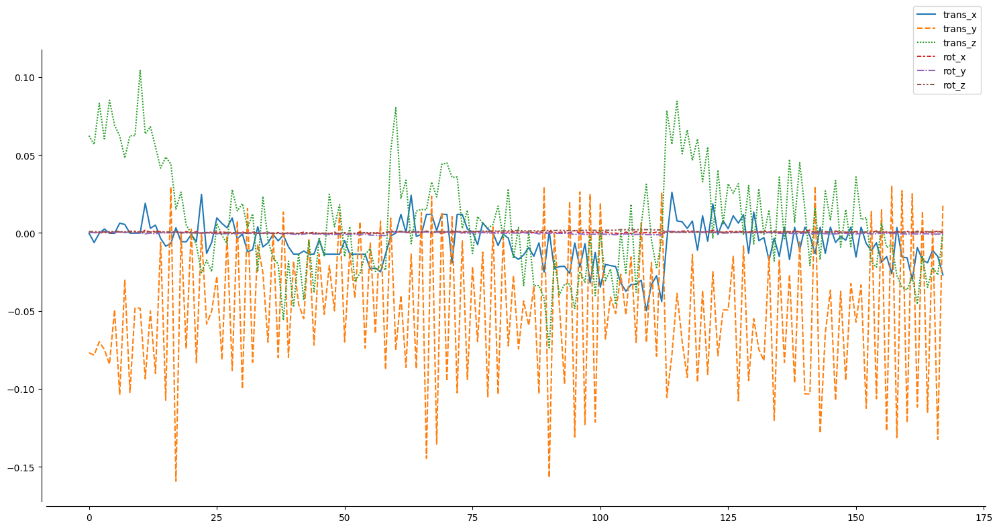
With everything in-place and ready to go, we can start exploring how to use functional connectivity for machine learning analyzes via nilearn and scikit-learn!
Machine learning - preparation#
Looking back at the graphic above and given that we want to run a supervised machine learning analysis, we need to prepare the input (x) and output (y). We will do so in two respective sub-sections.
The input - X#
As mentioned before, we want to use functional connectomes as input (x) for our machine learning model (m). In other words, we need to obtain a sample (n) by feature (p) matrix. Applied to our data and planned analyzes, this means we need to get a functional connectom (our features (p)) for all participants (samples (n)) in the dataset.
If you already went through the functional connectome section, you should have this ready to go and can load the needed data via:
X_features = np.load('data/development_fmri_correlation_matrix.npz', allow_pickle=True)['correlation_matrices']
If you didn’t go through the functional connectome section, you need to compute the functional connectomes for all participants now. Please implement your solution below based on the content in the other section, making the output a numpy array with a shape of (155, 39, 39), naming it X_features and keep in mind that it might take a couple of minutes:
## please provide your solution here
This should get you a numpy array including a functional connectome (39 regions) for each of the participants (155).
X_features.shape
(155, 39, 39)
We can also use nilearn to quickly make sure, things look as expected. For example, here’s the functional connectome of the first participant.
plotting.plot_matrix(X_features[0])
<matplotlib.image.AxesImage at 0x124ce43d0>
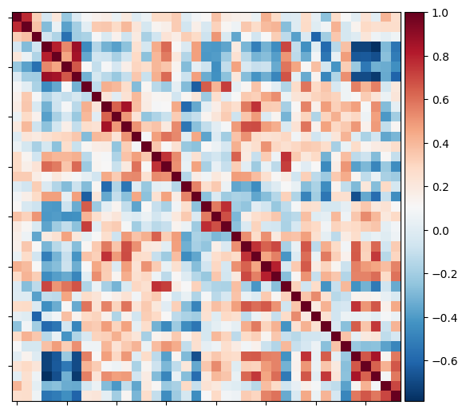
Looks about right, nice.
However, this actually outlines a potential problem with our input (X): as you can see and most likely already knew, the functional connectome is a symmetric matrix and thus its values and in turn our features (p) are mirrored and therefore duplicated across the diagonal. This would introduce a potential bias and error we need to address.
Luckily, we can easily do that by extracting the lower or upper triangle of the matrix using nilearn and thus cut the features in half, getting only the unique ones.
features_participant = connectome.sym_matrix_to_vec(X_features[0], discard_diagonal=True)
With that, we get the values of the lower triangle of the symmetric matrix (functional connectome), discarding the diagnoal (which we don’t need given its the correlation of a region with itself).
features_participant.shape
(741,)
This gets us 741 unique values, ie features. However, we would of course need to do that for all participants. Thus, could you please implement a little for-loop to do so, overwriting the X_features variable at the end?
## please provide your solution here
features_unique = []
for i, matrix in enumerate(X_features):
features_unique_tmp = connectome.sym_matrix_to_vec(matrix, discard_diagonal=True)
features_unique.append(features_unique_tmp)
X_features = np.array(features_unique)
Let’s make sure the output is as expected:
X_features.shape
(155, 741)
Great, we now have a numpy array containing the unique values, ie features (p), (741) for each participant (155).
To get a better idea of this looks like, we can easily visualize our X, that is samples (n) by feature (p) matrix.
plt.imshow(X_features, aspect='auto', cmap='viridis')
plt.colorbar()
plt.title('feature matrix')
plt.xlabel('features (p) - functional connectome values')
plt.ylabel('samples (n) - participants')
Text(0, 0.5, 'samples (n) - participants')
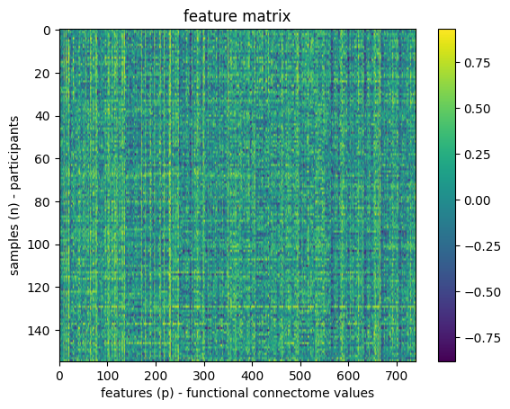
Awesome, we now have our input, ie X, ready and with that one part of the requirements we outlined above. Now to the other part.
The output - y#
In the beginning of this section, we mentioned that we are running a supervised machine learning analysis and thus also need the labels of the outcome we want to predict. In more detail, given that we want to predict something for each of our samples (n) based on their respective features (p) within a supervised learning approach, we need a way to assess if the predictions are accurate/correct and if not, how far they’re off, that is assessing the performance or accuracy of the model. This also concerns the models generalizability, error pattern and so forth.

In a supervised learning approach we therefore have to provide the (“ground-”) truth labels for each sample (n) against which we can compare the prediction against. Depending on your specific data and analyses this can be many different things and you might get the labels from different places. Given that we want to predict certain demographic variables of the participants, we should have a look at the datasets participant.tsv which in a BIDS dataset contains all demographic information for all participants, including common ones, such as age, and more specific ones, such as questionnaire responses.
Thus, lets have a look at the participant.tsv file of our example dataset:
demographic_info = pd.DataFrame(development_dataset.phenotypic)
demographic_info.head()
| participant_id | Age | AgeGroup | Child_Adult | Gender | Handedness | |
|---|---|---|---|---|---|---|
| 0 | sub-pixar123 | 27.06 | Adult | adult | F | R |
| 1 | sub-pixar124 | 33.44 | Adult | adult | M | R |
| 2 | sub-pixar125 | 31.00 | Adult | adult | M | R |
| 3 | sub-pixar126 | 19.00 | Adult | adult | F | R |
| 4 | sub-pixar127 | 23.00 | Adult | adult | F | R |
Already looks great but it might be nice to have a bit more information, specifically, behaviorally-relevant questionnaire data. Luckily, we have that information too. However, it’s in a different version of the participants.tsv which is not included in the nilearn version of the dataset. No worries though, as with python this is easily addressed as we can simply download the version we need and overwrite the existing one (thus also showing you once again how versatile python is). Please note, that we’re doing this is a showcase here and you shouldn’t overwrite important files like this one within a given analysis or if you need to for whatever reason, explicitely mention it in the code.
Downloading files via python can be done in many ways but most likely the in-built urllib package does the trick. We simply need to define a url to the file we want to download and where to download it to.
# import urllib
import urllib.request
# define a path and filename under which we want to store the to-be-downloaded file
demographic_info_path = datasets.get_data_dirs()[0] + '/development_fmri/development_fmri/participants.tsv'
# define the url from which we want to download the file
url = 'https://drive.usercontent.google.com/u/0/uc?id=1Y4zGVuo7EIU89Cu3JYrt6svgr5Y5oR14&export=download'
# download the file
urllib.request.urlretrieve(url, demographic_info_path)
('/Users/peerherholz/nilearn_data/development_fmri/development_fmri/participants.tsv',
<http.client.HTTPMessage at 0x124f99150>)
Ok, let’s check if this worked as intended by re-loading the participants.tsv file.
demographic_info = pd.read_csv(demographic_info_path, sep='\t').sort_values('participant_id')
demographic_info.head()
| participant_id | Age | AgeGroup | Child_Adult | Gender | Handedness | ToM Booklet-Matched | ToM Booklet-Matched-NOFB | FB_Composite | FB_Group | WPPSI BD raw | WPPSI BD scaled | KBIT_raw | KBIT_standard | DCCS Summary | Scanlog: Scanner | Scanlog: Coil | Scanlog: Voxel slize | Scanlog: Slice Gap | |
|---|---|---|---|---|---|---|---|---|---|---|---|---|---|---|---|---|---|---|---|
| 0 | sub-pixar001 | 4.774812 | 4yo | child | M | R | 0.80 | 0.736842 | 6.0 | pass | 22.0 | 13.0 | NaN | NaN | 3.0 | 3T1 | 7-8yo 32ch | 3mm iso | 0.1 |
| 1 | sub-pixar002 | 4.856947 | 4yo | child | F | R | 0.72 | 0.736842 | 4.0 | inc | 18.0 | 9.0 | NaN | NaN | 2.0 | 3T1 | 7-8yo 32ch | 3mm iso | 0.1 |
| 2 | sub-pixar003 | 4.153320 | 4yo | child | F | R | 0.44 | 0.421053 | 3.0 | inc | 15.0 | 9.0 | NaN | NaN | 3.0 | 3T1 | 7-8yo 32ch | 3mm iso | 0.1 |
| 3 | sub-pixar004 | 4.473648 | 4yo | child | F | R | 0.64 | 0.736842 | 2.0 | fail | 17.0 | 10.0 | NaN | NaN | 3.0 | 3T1 | 7-8yo 32ch | 3mm iso | 0.2 |
| 4 | sub-pixar005 | 4.837782 | 4yo | child | F | R | 0.60 | 0.578947 | 4.0 | inc | 13.0 | 5.0 | NaN | NaN | 2.0 | 3T1 | 7-8yo 32ch | 3mm iso | 0.2 |
Fantastic! Now we have many interesting behaviorally-relevant variables we could include in our machine learning analysis.
We will start with using Age as a variable of interest, ie our labels as we want to evaluate if we can predict the age of participants based on their functional connectome. (Please note, that this is an example to showcase functionality and might not reflect a sensible analysis. However, given our example, a lot of prior research actually used different neuroimaging data to predict age.)
For easy access, we will assign the age of participants, ie our labels to a new python variable.
y_age = demographic_info['Age']
One of the first things you should always do, independent of the planned analyzes, is to look at your data as it more often than not already includes a lot of information and might even point to potential problems and/or requirement/possibility for one approach over another. Therefore, we should plot our labels to get a respective idea.
import matplotlib.pyplot as plt
import seaborn as sns
sns.histplot(y_age)
sns.despine(offset=5)
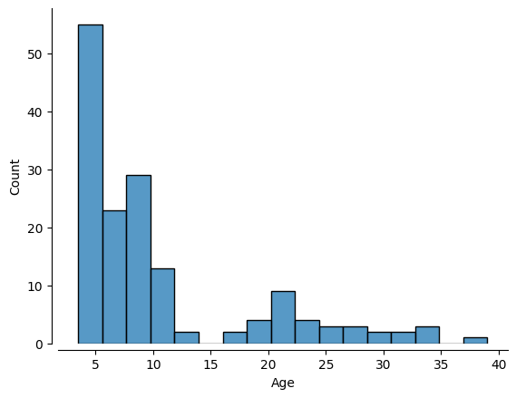
Based on this outcome and our planned analysis of predicting age given functional connectomes: what do you think? Is there any problem here? (Please don’t scroll down to get the answer hehe.)
With that, we have concluded our data preparation (getting our input X, features (p) by samples (n), and output (y), the labels) and have it ready to go.
Machine learning - running a model#
Having the data ready, the next thing you should do, is to split your dataset into a training and a test sample. We will explore this further in a bit.
However, as seen and discussed above, there’s a tremendous imbalance concerning the distribution of our variable of interest, ie labels. That is, there are way more samples for certain age ranges than others. In turn, your machine learning model (m) would “see” way more data for certain age ranges than others which could and most likely will introduce all sorts of problems concerning performance, generalizability and so on.
Furthermore, it is part of a more general problem. “Classical” machine learning models and the underlying algorithms operate on the assumption that there are more samples (n) than there are predictors or features(p). In fact many more. Why is that?
Consider a high-dimensional space whose dimensions are defined by the number of features (e.g. 10 features would result in a space with 10 dimensions. The resulting volume of this space is the amount of samples that could be drawn from the domain and the number of samples entails the samples you need to address your learning problem, ie outcome. That is why folks say: “get more data”, machine learning is data-hungry: our samples need to be as representative of the high-dimensional domain as possible.
Thus, as the number of features increases, so should the number of samples as to capture enough of the space for the model at hand.
This is referred to as the curse of dimensionality and poses as a major problem in many fields that aim to utilize machine learning on unsuitable data. Why is that?
Just imagine we have way more features than samples, ie 50 features and 10 samples. Instead of having a large amount of samples within the space, allowing to achieve a sufficient coverage of the latter, we now have a very high-dimensional space (50 dimensions) and only very few samples therein, basically not allowing us to capture nearly enough of the space as we would need to. This can result in unexpected outcomes, misleading results or even lead to complete model failure. Furthermore, respective datasets often lead to models that are overfitted and don’t generalize well.
However, there are a few things that can be done to address this, including feature selection, projection into lower-dimensional spaces (via dimensionality reduction approaches) or representations or regularization.
Question for everyone: what kind have datasets do we usually have in neuroscience, especially neuroimaging?
After everything we just talked about, we want to be sure that our training and test sample are as closely matched as possible! We can do that with a so-called “stratified split”. The dataset at hand has a variable indicating AgeGroup which we could use for that. We can use that to make sure our training and testing sets are balanced!
age_class = demographic_info['AgeGroup']
age_class.value_counts()
AgeGroup
5yo 34
8-12yo 34
Adult 33
7yo 23
3yo 17
4yo 14
Name: count, dtype: int64
With that, we can finally create the training and test samplesor sets. We of course don’t have to do this by hand but can use a helpful function from scikit-learn, namely train_test_split, which will do that for us given we provide the needed information.
from sklearn.model_selection import train_test_split
X_train, X_test, y_train, y_test= train_test_split(X_features, # x
y_age, # y
test_size = 0.2, # 80%/20% split
shuffle = True, # shuffle dataset
# before splitting
stratify = age_class, # keep
# distribution
# of ageclass
# consistent
# betw. train
# & test sets.
random_state = 123 # same shuffle each
# time
)
We know: there’s a lot going on. So let’s unpack it. We’re using train_test_split to split our data into training and test samples or sets. For this we:
provide the
input,X(samples(n) byfeatures(p))the
labels,yset the test size to
0.2to create a80/20split which was shown to be a sensible default by Varoquaux et al. 2017set
shuffletoTruetoshufflethedatasetbeforesplittingitset
stratifytoage_classto create astratified splitof ourdataset, ensuring equal distribution oflabelsset the
random_stateto123to make our analysisreproducible(as werandomlyshufflethedataand drawsamples, we would like to “control” therandomnessa little bit)
As an output we get:
X_train-> thetraining setof ourinputXX_val-> thevalidation setof ourinputXy_train-> thetraining setof ourlabelsyy_val-> thevalidation setof ourlabelsy
Let’s have a closer look at them, starting with the number of samples for each.
print('training:', len(X_train),
'testing:', len(X_test))
training: 124 testing: 31
We get 124 samples, ie participants in the training sample and 31 samples, ie participants in the test sample.
Next, we also want to make sure the stratification based on age worked. To do so, we could plot their respective distributions in the training and test set.
sns.histplot(y_train, kde=True)
sns.histplot(y_test, kde=True)
sns.despine(offset=5)
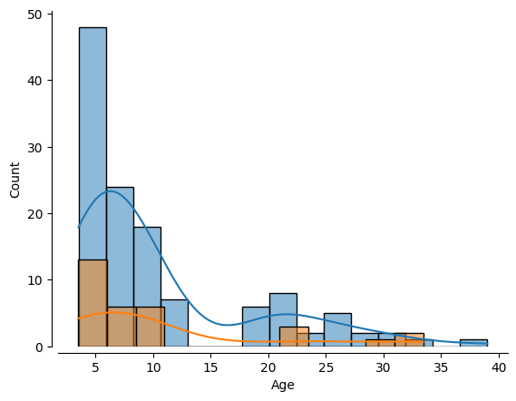
How would you assess this outcome? Do we have a somewhat comparable distribution of labels in the training and test set?
Alrighty, we have everything set: X, y and a stratified split between training and test set based on age.
Now, it’s finally time to specify and run a machine learning model. But the question is: what kind? We know that we want to run a supervised learning approach. That’s the first big question. Another one is: what do we want to predict?
The outcome, ie the labels or y, specifically their data type. Here’s a hopefully helpful graphic to explain this further:

Given that we want to predict the age of participants based on their functional connectome, we are dealing with a continuous problem, as age is a continuous variable. So, we should look within this quadrant.
While this may seem unambitious, simple models can be and often are very robust. And we probably don’t have enough data to create more complex models (but we can try later).
For more information, see this excellent resource: https://hal.inria.fr/hal-01824205
Lucky for us, scikit-learn has us covered as there’s a respective class for most models you would like to run.

Importantely, this graphic also outlines the need for large-scale datasets again.
For the sake of simplicity and time, we will employ a model that is somewhat unfeasible. Machine learning can get pretty “fancy”, ie complex, pretty quickly. We’ll thus start with a fairly standard regression model, a so-called Support Vector Regressor (SVR) with a linear kernel.
from sklearn.svm import SVR
l_svr = SVR(kernel='linear')
Comparable to the different aspects we have explored in nilearn, after setting up a model, we need to fit it to the data. Importantely, we will do so on the training set only.
l_svr.fit(X_train, y_train)
SVR(kernel='linear')In a Jupyter environment, please rerun this cell to show the HTML representation or trust the notebook.
On GitHub, the HTML representation is unable to render, please try loading this page with nbviewer.org.
SVR(kernel='linear')
After that, we can already go to the next step and predict the labels based on what the model learned. The fitted model l_svr allows us to do that easily by calling its predict function.
y_pred = l_svr.predict(X_train)
Cool. Now, we can also use l_svr to compute the performance of the model via its score function. The respective value is based on the model and learning problem at hand, the score function returns values that can reflect different things. As we’re working with continuous data (age) and using a corresponding model (SVR), the output will in our case reflect r squared or R².
In terms of the workflow we outlined earlier, we are now talking about the metric that is used to evaluate the model.
R-squared (R²) is a common metric for regression models that indicates how much of the variability in the target variable is explained by the model. Formally, it compares the model’s predictions to a simple baseline (using the mean of the target) to see if the model does a better job predicting the target values than just guessing their average. A higher R² (closer to 1) usually suggests a better fit, while lower or negative values suggest the model isn’t capturing the underlying patterns as well as the baseline.
r2 = l_svr.score(X_train, y_train)
Having fitted and scored our model we can now evaluate its performance by checking its accuracy and plotting predicted against actual labels (as we are using on a supervised learning approach).
# print results
print('accuracy (R2)', r2)
sns.regplot(x = y_pred, y = y_train)
plt.xlabel('Predicted Age')
plt.ylabel('Actual Age')
sns.despine(offset=5)
accuracy (R2) 0.9998390672291223
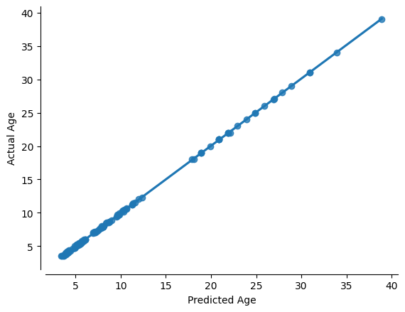
Oh damn, the hype is true: machine learning is amazing!!! Almost a perfect fit!
…which usually means there’s something wrong. What’s the problem here?
That’s correct: we evaluated the model predictive performance on the same data we used to train it. This is not valid as the model has already “seen” and thus knows the data it should predict. To evaluate its predictive and overall performance, we need to validate it on previously unseen, ie new, data. If we assess the model on the same data it was trained on, it may simply memorize patterns rather than generalize to new data. By using a separate validation set, we can measure how well the model performs on unseen data and fine-tune it accordingly. In turn, this means that we should split our training set again, this time into a training and validate set. Importantly, this still concerns the training of the model as the final evaluation will happen through the test set, ie data that was not seen during any part of the model training.
That being said, let’s split the training set again into a training and validation set. For this, we can use the train_test_split again. However, this time only applying it on the training set.
age_class2 = demographic_info.loc[y_train.index,'AgeGroup']
X_train_train, X_val, y_train_train, y_val = train_test_split(
X_train, # x
y_train, # y
test_size = 0.25, # 75%/25% split
shuffle = True, # shuffle dataset
# before splitting
stratify = age_class2, # keep
# distribution
# of ageclass
# consistent
# betw. train
# & test sets.
random_state = 123 # same shuffle each
# time
)
How does our newly splitted training set look now?
print('training:', len(X_train_train),
'testing:', len(X_val))
training: 93 testing: 31
sns.histplot(y_train_train, kde=True)
sns.histplot(y_val, kde=True)
sns.despine(offset=5)
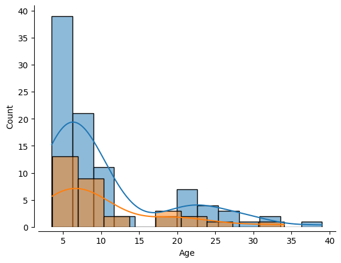
Great, this looks about right. Now let’s run our model again but this in the correct manner. That is we fit it as before but on the training set of the training set:
l_svr.fit(X_train_train, y_train_train)
SVR(kernel='linear')In a Jupyter environment, please rerun this cell to show the HTML representation or trust the notebook.
On GitHub, the HTML representation is unable to render, please try loading this page with nbviewer.org.
SVR(kernel='linear')
and then use the fitted model to predict our outcome of interest, ie age, based on previously unseen data, that is the validation set of the training set.
y_pred = l_svr.predict(X_val)
How does the model perform? Let’s have a look!
sns.regplot(x = y_pred, y = y_val)
plt.xlabel('Predicted Age')
plt.ylabel('Actual Age')
sns.despine(offset=5)
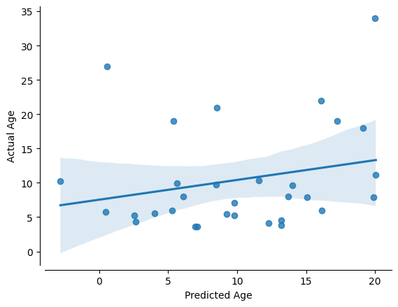
Oh damn, that seems way worse than before. We should put some numbers to that, ie assessing the model’s performance as before.
acc = l_svr.score(X_test, y_test)
print('accuracy (R2) = ', acc)
accuracy (R2) = 0.1460991511206282
There you see bias and overfitting in action. It seems that our model is not able to generalize to previously unseen data. To put this into a more intelligable perspective, we will compute another assessment of our model’s performance. Specifically, we’ll also have a look at the mean-absolute-error (MAE). It is measured as the average sum of the absolute diffrences between predictions and actual observations, ie labels. Unlike other measures, MAE is more robust to outliers, since it doesn’t square the deviations (cf. mean-squared-error). It provides a way to asses “how far off” are our predictions from our actual data, while staying on it’s referential space.
from sklearn.metrics import mean_absolute_error
mae = mean_absolute_error(y_true=y_val,y_pred=y_pred)
print('MAE = ',mae)
MAE = 6.495359210136806
As the MAE based on the absolute differences in terms of labels, its unit reflects the unit of the labels. In our case this would refer to age in years. In turn, our model’s predictions are on average 6.5 years off. This might not seem like a lot but might be crucial depending on the data, learning problem and intended use.
So … maybe machine learning isn’t as amazing as we thought…
However, here’s the “good news”. Only splitting the training data once can lead to performance estimates that are highly dependent on that particular split, which might not represent the overall variability of the data. This approach risks overfitting to one subset of data and may produce misleading conclusions about a model’s ability to generalize. Additionally, partitioning the available data into three sets, we drastically reduce the number of samples which can be used for learning.
To address this, cross-validation is utilized: it repeatedly partitions the data into different training and validation sets. Cross-validation is important because it provides a more robust and reliable estimate of a model’s performance. By partitioning the data into multiple subsets (folds) and iteratively training and validating on different splits, we can ensure that the performance metrics are not dependent on a single arbitrary train-validation split. This process helps in tuning hyperparameters, selecting the best model, and reducing the risk of overfitting by validating the model’s ability to generalize to unseen data.
While we could implement this manually, e.g. via a for loop, we can make things easier and more straightforward by utilizing scikit-learn’s cross_val_predict and cross_val_score function.
As you can see below, they basically include the model, the training set and an argument, cv that allows us to specify how the cross-validation should be implemented. No need to manually split the training set again, the cross_val_ functions will handle that for us based on the data and cv. Regarding the latter, we will simply use 10 to indicate that we want to split the data into training and validation 10 times, each time training the model and evaluating its performance. Please note, that there are way more complex cv settings.
We will start with cross_val_predict to get prediction based on repeated splits.
from sklearn.model_selection import cross_val_predict
y_pred = cross_val_predict(l_svr, X_train, y_train, cv=10)
Now, y_pred reflects the average prediction across 10 different splits of the training data into training and validation sets. Thus, we can plot it as before.
sns.regplot(x = y_pred, y = y_train)
plt.xlabel('Predicted Age')
plt.ylabel('Actual Age')
sns.despine(offset=5)
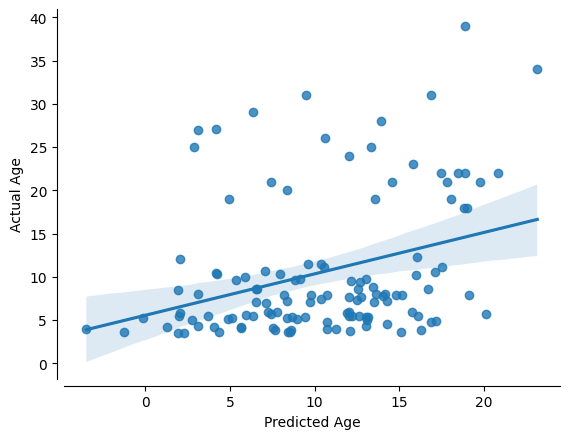
Ok ok, this looks slightly “better”. However, we need the numbers! Thus, let’s use cross_val_score.
from sklearn.model_selection import cross_val_score
acc = cross_val_score(l_svr, X_train, y_train, cv=10)
mae = cross_val_score(l_svr, X_train, y_train, cv=10, scoring='neg_mean_absolute_error')
With that, we can look at the performance of the predictions for each fold of the cross-validation.
for i in range(10):
print('Fold {} -- R2 = {}, MAE = {}'.format(i, acc[i],-mae[i]))
Fold 0 -- R2 = -0.2162934689236784, MAE = 7.537528165271434
Fold 1 -- R2 = -0.13872475721392274, MAE = 5.960973887258287
Fold 2 -- R2 = 0.08720732875204673, MAE = 5.129654374881498
Fold 3 -- R2 = 0.20517790443178285, MAE = 6.027738913670467
Fold 4 -- R2 = -0.07324580326043417, MAE = 5.013468449712502
Fold 5 -- R2 = -0.2985025699694268, MAE = 6.907882686510539
Fold 6 -- R2 = 0.03402841212143537, MAE = 5.425388417768737
Fold 7 -- R2 = 0.2993194235898986, MAE = 5.2339398953244896
Fold 8 -- R2 = 0.22097275083179524, MAE = 5.780136195014447
Fold 9 -- R2 = -0.6907718986801099, MAE = 7.1681001463488
We can also look at the overall performance of the model.
print('R2:',acc.mean())
print('MAE:',mae.mean())
R2: -0.05708326783206132
MAE: -6.0184811131761204
Not that much better but more importantly, this is a more accurate estimation of our model’s predictive efficacy. Our sample size is larger based on several rounds of prediction of unseen data through repeated splits of the training data.
So, where can we go from here? While the above-outlined steps are somewhat realistic and entail sane defaults, machine learning is far more complex and includes many more aspects. In the following, we will explore a few of them.
Machine learning - adapting your pipeline#
It’s very important to learn when and where its appropriate to apdat your machine learning pipeline. Since we have done all of the previous analysis in our training data, we could go through a few different commonly utilized approaches. But we absolutely cannot “test” it on our left out test data. If we do, we are in great danger of overfitting and introducing biases.
It is not uncommon and overall ok to try other models, or adapt the pipeline in other ways. The important part is: don’t go on a wild goose chase to try to find the best possible outcomes. Everything you do should still be based on valid assumptions/estimates, your data and learning problem. In the case at hand, due to our relatively small sample size, we are probably not powered sufficiently to do so, and we would once again risk overfitting. However, for the sake of demonstration, we will do some adapting.
We will try a few different examples:
Normalizingourtarget dataTweaking our
hyperparametersTrying a more complicated
modelFeature selection
Normalizing the target data#
Normalizing the target variable, ie labels can be particularly useful when the target values vary widely in scale or are skewed. Scaling the target helps stabilize and speed up the optimization process during training, as the model deals with values within a more manageable range. This can lead to improved numerical stability, more efficient convergence, and sometimes even enhanced predictive accuracy, especially when using algorithms sensitive to the scale of the data. However, as mentioned before, please make sure this is applicable to your data.
In scikit-learn, we use the preprocessing methods to employ a vast range of approaches to change raw feature vectors into a representation that is more suitable for the downstream estimators, ie models. More on that is outlined in the preprocessing section of the documentation.
Normalization is a preprocessing technique that transforms features to a common scale, without distorting differences in the ranges of values. This process is especially important when features have different scales or units, as it prevents features with larger magnitudes from dominating those with smaller scales. Common normalization methods include min-max scaling (which rescales features to a fixed range, typically [0, 1]) and standardization (which centers data by subtracting the mean and scales it by the standard deviation). By normalizing the data, machine learning algorithms — particularly those that rely on distance calculations or gradient-based optimization — can converge faster and perform more reliably, ultimately leading to improved model performance.
In scikit-learn, we can use the FunctionTransformer to implement.
from sklearn.preprocessing import FunctionTransformer
log_transformer = FunctionTransformer(func = np.log, validate=True)
As we have explored before, after the setup we needd to fit it:
log_transformer.fit(y_train.values.reshape(-1,1))
y_train_log = log_transformer.transform(y_train.values.reshape(-1,1))[:,0]
Let’s plot the normalized data:
sns.histplot(y_train_log, kde=True)
plt.title("Log-Transformed Age")
Text(0.5, 1.0, 'Log-Transformed Age')
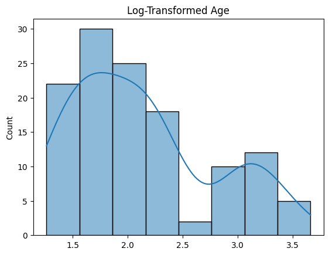
Let’s the impact of this preprocessing step and cross-validate our model once again with this new log-transformed target:
# predict
y_pred = cross_val_predict(l_svr, X_train, y_train_log, cv=10)
# scores
acc = r2_score(y_train_log, y_pred)
mae = mean_absolute_error(y_train_log,y_pred)
print('R2:',acc)
print('MAE:',mae)
sns.regplot(x = y_pred, y = y_train_log)
plt.xlabel('Predicted Log Age')
plt.ylabel('Log Age')
sns.despine(offset=5)
R2: 0.13890582979215949
MAE: 0.46918218095165476
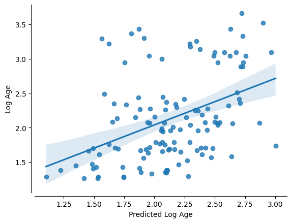
Alrighty, that seems like an improvement as indicated by the R² and the MAE. However, there’s a downside: normalization can sometimes reduce interpretability because the transformed values no longer reflect the original units, which may obscure the direct real-world meaning of the data. Therefore, normalization is particularly useful when features vary widely in scale or when numerical stability and model performance are priorities, but if preserving the original scale for interpretability is crucial, one might consider transforming the results back to the original units after modeling.
Several normalization techniques can be used to scale data effectively, each with its benefits depending on the data characteristics and modeling requirements:
Min-Max Scaling: This methodrescalesthedatato a fixedrange, typically[0, 1]. It’s useful when you want to preserve theshapeof theoriginal distributionbut adjust thescale.Standardization(Z-score Scaling):Standardizationtransformsdatato have ameanofzeroand astandard deviationof one. This technique is effective when thedata distributionis roughlyGaussianand you want to comparefeatureson a similarscale.Robust Scaling: This approach uses themedianand interquartilerange, making it less sensitive tooutliersthanstandardization.Log Transformation: By applying alogarithm, this transformation reduces the impact of extremevaluesand can help innormalizingskewed data distributions.Quantile Transformation: This method maps the originaldatato a uniform ornormal distributionbased onquantiles, which can be beneficial when the underlyingdistributionisnon-Gaussian.Max-Abs Scaling: This techniquescales databy itsmaximum absolute value, preserving thesparsity of dataand ensuringfeatureslie within therange[-1, 1].
Each of these methods has its own strengths, so the choice should be guided by the specific nature of your data and the requirements of your modeling approach.
Tweak the hyperparameters#
Many machine learning algorithms have hyperparameters that can be “tuned” to optimize model fitting. Hyperparameters are the external configurations set before training a machine learning model. Unlike model parameters that are learned from the data during training, hyperparameters determine how the learning process is conducted. They can influence various aspects of the model, such as its complexity, learning rate, or regularization strength. Choosing the right hyperparameters is crucial because they can significantly impact the model’s performance and its ability to generalize to new, unseen data.
Tuning these hyperparameters is essential, as careful adjustments can significantly enhance model performance and fit. However, overly aggressive or unsystematic tuning can lead to overfitting, where the model becomes too tailored to the training data and performs poorly on unseen data.
For instance, our Support Vector Regression (SVR) model includes several hyperparameters such as the kernel type, regularization parameter (C), and epsilon value in the loss function. Exploring systematic approaches like grid search, random search, or Bayesian optimization can help identify the best combination of hyperparameters while mitigating the risk of overfitting. These methods allow us to iteratively refine our model, balancing complexity and generalization for optimal predictive performance.
SVR?
One way is to plot a “Validation Curve” – this will let us view changes in training and validation accuracy of a model as we shift its hyperparameters. We can do this easily with scikit-learn. Let’s start with the regulariazation parameter C.
In Support Vector Regression (SVR), the hyperparameter C plays a crucial role as the regularization parameter. It controls the trade-off between fitting the training data well and keeping the model as simple as possible. A high value of C forces the model to penalize errors more heavily, leading to a closer fit to the training data but increasing the risk of overfitting. Conversely, a lower value of C allows more flexibility by tolerating some errors, which can help the model generalize better to unseen data. This balance is key to achieving optimal performance in SVR and other models.
We’re going to set a range of C values and evaluate the impact.
from sklearn.model_selection import validation_curve
C_range = 10. ** np.arange(-3, 8) # A range of different values for C
train_scores, valid_scores = validation_curve(l_svr, X_train, y_train_log,
param_name= "C",
param_range = C_range,
cv=10)
Nice. With a little bit of pandas, we can make the results ready for an informative plot:
tScores = pd.DataFrame(train_scores).stack().reset_index()
tScores.columns = ['C','Fold','Score']
tScores.loc[:,'Type'] = ['Train' for x in range(len(tScores))]
vScores = pd.DataFrame(valid_scores).stack().reset_index()
vScores.columns = ['C','Fold','Score']
vScores.loc[:,'Type'] = ['Validate' for x in range(len(vScores))]
ValCurves = pd.concat([tScores,vScores]).reset_index(drop=True)
ValCurves.head()
| C | Fold | Score | Type | |
|---|---|---|---|---|
| 0 | 0 | 0 | 0.163018 | Train |
| 1 | 0 | 1 | 0.135617 | Train |
| 2 | 0 | 2 | 0.140916 | Train |
| 3 | 0 | 3 | 0.163752 | Train |
| 4 | 0 | 4 | 0.123096 | Train |
which we can create with seaborn:
g = sns.lineplot(x='C', y='Score',hue='Type',data=ValCurves)
g.set_xticks(range(11))
g.set_xticklabels(C_range, rotation=90);
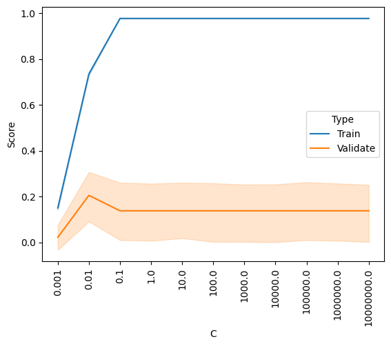
It looks like the outcome is better for higher values of C, and plateaus somewhere between 0.1 and 1. The default setting is C=1, so it looks like we can’t really improve by changing C.
But our SVR model actually has two hyperparameters, C and epsilon. In SVR, epsilon defines the margin of tolerance within which no penalty is applied to errors. Essentially, it creates an “epsilon-insensitive” tube around the predicted function. Predictions that fall within this tube are considered acceptable and do not contribute to the loss function. A larger epsilon value can make the model less sensitive to small deviations, potentially leading to a simpler model with better generalization. However, setting epsilon too high may overlook meaningful variations in the data, while a very small epsilon may result in an overly complex model that risks overfitting.
Perhaps there is an optimal combination of settings for these two parameters.
We can explore that somewhat quickly with a grid search, which is once again easily achieved with scikit-learn. Grid search is a systematic approach to hyperparameter tuning that involves exhaustively evaluating a predefined set of hyperparameter values. By constructing a “grid” of possible combinations, it tests each combination through cross-validation to determine which set yields the best model performance. While grid search can be computationally intensive, it provides a thorough exploration of the hyperparameter space, ensuring that the optimal settings are identified for the model.
Because we are fitting the model multiple times with cross-validation, this will take some time.
from sklearn.model_selection import GridSearchCV
C_range = 10. ** np.arange(-3, 8)
epsilon_range = 10. ** np.arange(-3, 8)
param_grid = dict(epsilon=epsilon_range, C=C_range)
grid = GridSearchCV(l_svr, param_grid=param_grid, cv=10)
grid.fit(X_train, y_train_log)
GridSearchCV(cv=10, estimator=SVR(kernel='linear'),
param_grid={'C': array([1.e-03, 1.e-02, 1.e-01, 1.e+00, 1.e+01, 1.e+02, 1.e+03, 1.e+04,
1.e+05, 1.e+06, 1.e+07]),
'epsilon': array([1.e-03, 1.e-02, 1.e-01, 1.e+00, 1.e+01, 1.e+02, 1.e+03, 1.e+04,
1.e+05, 1.e+06, 1.e+07])})In a Jupyter environment, please rerun this cell to show the HTML representation or trust the notebook. On GitHub, the HTML representation is unable to render, please try loading this page with nbviewer.org.
GridSearchCV(cv=10, estimator=SVR(kernel='linear'),
param_grid={'C': array([1.e-03, 1.e-02, 1.e-01, 1.e+00, 1.e+01, 1.e+02, 1.e+03, 1.e+04,
1.e+05, 1.e+06, 1.e+07]),
'epsilon': array([1.e-03, 1.e-02, 1.e-01, 1.e+00, 1.e+01, 1.e+02, 1.e+03, 1.e+04,
1.e+05, 1.e+06, 1.e+07])})SVR(C=0.01, kernel='linear')
SVR(C=0.01, kernel='linear')
Now that the grid search has completed, let’s find out the “best” parameter combination
print(grid.best_params_)
{'C': 0.01, 'epsilon': 0.1}
And if redo our cross-validation with this parameter set?
y_pred = cross_val_predict(SVR(kernel='linear',C=0.10,epsilon=0.10, gamma='auto'),
X_train, y_train_log, cv=10)
# scores
acc = r2_score(y_train_log, y_pred)
mae = mean_absolute_error(y_train_log,y_pred)
print('R2:',acc)
print('MAE:',mae)
sns.regplot(x = y_pred, y = y_train_log)
plt.xlabel('Predicted Log Age')
plt.ylabel('Log Age')
R2: 0.13890582979215949
MAE: 0.46918218095165476
Text(0, 0.5, 'Log Age')
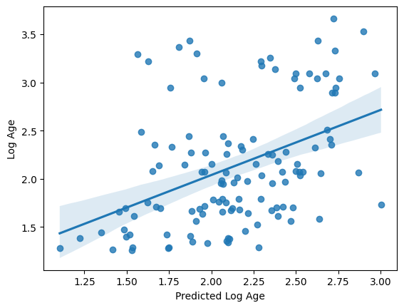
Perhaps unsurprisingly, the model fit is actually exactly the same as what we had with our defaults.
Grid search can be a powerful and useful tool. But can you think of a way that, if not properly utilized, it could lead to overfitting?
You can find a nice set of tutorials with links to very helpful content regarding how to tune hyperparameters while be aware of over- and under-fitting here:
https://scikit-learn.org/stable/modules/learning_curve.html
Trying a more complicated model#
While a simple linear model often suffices, experimenting with a more complex model can be informative. For instance, although the data may not support a very complex non-linear relationship (like high-order polynomials) due to limited sample size, exploring these options can reveal potential trends, such as a quadratic relationship with age. For demonstration purposes, we’ll use a validation curve to assess how the model’s performance changes as we increase the polynomial degree from 2nd to 8th order. This approach helps us visualize whether adding complexity improves predictions or leads to overfitting.
from sklearn.model_selection import validation_curve
degree_range = list(range(1,8)) # A range of different values for C
train_scores, valid_scores = validation_curve(SVR(kernel='poly',
gamma='scale'
),
X=X_train, y=y_train_log,
param_name= "degree",
param_range = degree_range,
cv=10)
Nice. With a little bit of pandas, we can make the results ready for an informative plot:
tScores = pd.DataFrame(train_scores).stack().reset_index()
tScores.columns = ['Degree','Fold','Score']
tScores.loc[:,'Type'] = ['Train' for x in range(len(tScores))]
vScores = pd.DataFrame(valid_scores).stack().reset_index()
vScores.columns = ['Degree','Fold','Score']
vScores.loc[:,'Type'] = ['Validate' for x in range(len(vScores))]
ValCurves = pd.concat([tScores,vScores]).reset_index(drop=True)
ValCurves.head()
| Degree | Fold | Score | Type | |
|---|---|---|---|---|
| 0 | 0 | 0 | 0.829687 | Train |
| 1 | 0 | 1 | 0.818176 | Train |
| 2 | 0 | 2 | 0.807175 | Train |
| 3 | 0 | 3 | 0.808440 | Train |
| 4 | 0 | 4 | 0.809553 | Train |
which we can create with seaborn:
g = sns.lineplot(x='Degree',y='Score',hue='Type',data=ValCurves)
g.set_xticks(range(7))
g.set_xticklabels(degree_range, rotation=90)
[Text(0, 0, '1'),
Text(1, 0, '2'),
Text(2, 0, '3'),
Text(3, 0, '4'),
Text(4, 0, '5'),
Text(5, 0, '6'),
Text(6, 0, '7')]
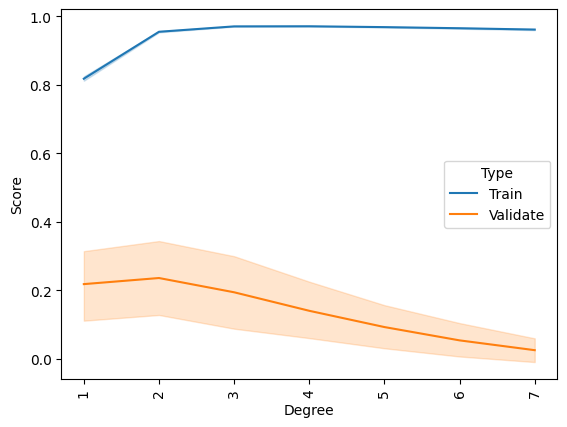
It appears that we cannot improve our model by increasing the complexity of the fit. If one looked only at the training data, one might surmise that a 2nd order fit could be a slightly better model but that improvement does not generalize to the validation data.
Feature selection#
With 741 features, it’s unlikely that every single one contributes stably to the model. Generally, models perform better when they are built on a smaller set of important features rather than a vast number of less relevant ones. The challenge lies in identifying which features are truly useful. To address this, we’ll implement a basic feature selection strategy to sift through the features and retain only those that provide a certain predictive value.
X_train.shape
(124, 741)
We can use scikit-learn’s SelectPercentile() function which selects the top X% of features based on univariate tests, aiming to identify those with the highest potential relevance. This approach helps highlight theoretically useful features, but it’s important to remember that statistical significance does not always translate to predictive power.
Additionally, there is a risk of overfitting. For example, when using 10-fold cross-validation, separate feature selection must be performed within each fold. This requirement means that a manual cross-validation setup is necessary rather than relying on automated functions like cross_val_predict().
from sklearn.feature_selection import SelectPercentile, f_regression
from sklearn.model_selection import KFold
from sklearn.pipeline import Pipeline
# Build a tiny pipeline that does feature selection (top 20% of features),
# and then prediction with our linear svr model.
model = Pipeline([
('feature_selection',SelectPercentile(f_regression,percentile=20)),
('prediction', l_svr)
])
y_pred = [] # a container to catch the predictions from each fold
y_index = [] # just in case, the index for each prediciton
# First we create 10 splits of the data
skf = KFold(n_splits=10, shuffle=True, random_state=123)
# For each split, assemble the train and test samples
for tr_ind, te_ind in skf.split(X_train):
X_tr = X_train[tr_ind]
y_tr = y_train_log[tr_ind]
X_te = X_train[te_ind]
y_index += list(te_ind) # store the index of samples to predict
# and run our pipeline
model.fit(X_tr, y_tr) # fit the data to the model using our mini pipeline
predictions = model.predict(X_te).tolist() # get the predictions for this fold
y_pred += predictions # add them to the list of predictions
Alrighty, let’s see if only using the top 20% of features improves the model at all.
acc = r2_score(y_train_log[y_index], y_pred)
mae = mean_absolute_error(y_train_log[y_index],y_pred)
print('R2:',acc)
print('MAE:',mae)
sns.regplot(x = np.array(y_pred), y = y_train_log[y_index])
plt.xlabel('Predicted Log Age')
plt.ylabel('Log Age')
R2: -0.23181012383026856
MAE: 0.5460803399486623
Text(0, 0.5, 'Log Age')
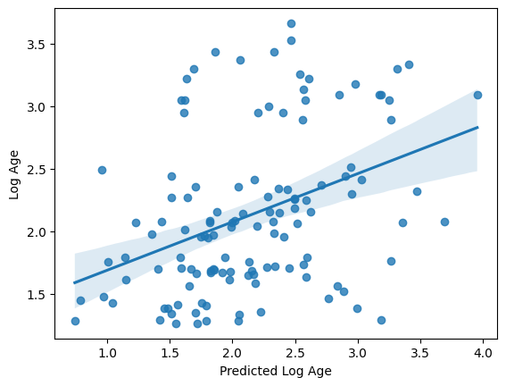
Nope, in fact it got a bit worse. It seems we’re getting “value at the margins” so to speak. This is a very good example of how significance != prediction.
For more details on the variety of feature selection techniques available in scikit-learn, refer to the scikit-learn documentation. Additionally, this DataCamp tutorial offers a thoughtful introduction to feature selection for new machine learning practitioners.
In summary, while we experimented with several feature selection and model tweaking strategies, most adjustments didn’t lead to notable improvements in performance — a common outcome in practice. There could be several reasons for this, including the possibility that our original feature set was already well-suited to the problem or that further tweaks might simply overcomplicate the model without adding predictive value. As we move forward with our validation data, it might be best to stick with a more basic model, though exploring options like predicting log-transformed age could be worthwhile.
Can our model predict age in completely un-seen data?#
Having developed a model to predict age from rs-fMRI, ie functional connectomes, it’s time to assess its generalizability. We’ll retrain our model using the entire training dataset and then evaluate its performance by predicting the age of participants, ie samples (n) that were set aside in the test set at the beginning. This step is crucial to determine if our model can accurately predict age in completely new, unseen data.
Because we performed a log transformation on our training data, we will need to transform our testing data using the same information. This consistency ensures that the model interprets the test data in the same way it learned from the training data. Fortunately, since we stored our transformation in an object, we can easily reuse it, guaranteeing that both datasets are processed identically.
y_test_log = log_transformer.transform(y_test.values.reshape(-1,1))[:,0]
And now for the moment of truth!
No cross-validation needed here. We simply fit the model with the training data and use it to predict the testing data
I’m so nervous. Let’s just do it all in one cell
import warnings
warnings.filterwarnings("ignore")
from sklearn.compose import TransformedTargetRegressor
# Define the log transformer
# To invert the transformation and predict on the original scale, set inverse_func=np.exp
log_transformer = FunctionTransformer(np.log, validate=True, check_inverse=False)
# Create a TransformedTargetRegressor that applies the log transformation to the target
# Here, l_svr is your SVR model
model_pipeline = TransformedTargetRegressor(regressor=l_svr, transformer=log_transformer)
# Fit the pipeline on all of the training data
model_pipeline.fit(X_train, y_train.values)
# Evaluate performance using cross-validation on the training set
# This returns predictions on the log-transformed scale (if no inverse_func is set)
y_train_log = log_transformer.transform(y_train.values.reshape(-1, 1))[:, 0]
y_pred_cv = cross_val_predict(model_pipeline, X_train, y_train.values, cv=10)
Ok, let’s check the performance as we usually do.
acc = r2_score(y_train_log, y_pred_cv)
mae = mean_absolute_error(y_train_log, y_pred_cv)
print('R2:', acc)
print('MAE:', mae)
R2: 0.13890582979215949
MAE: 0.46918218095165476
The same as we got before, ok. Now it’s time to evaluate our model’s performance on the so-far unseen test data. To do so, we use the fitted model (in this case the pipeline that entails the transformation and the model) to predict age in the test sample, X_test
y_pred_test = model_pipeline.predict(X_test)
and then compute its performance as we did before.
# Evaluate on the testing set
# Transform the true test targets to log scale for comparison
y_test_log = log_transformer.transform(y_test.values.reshape(-1, 1))[:, 0]
test_acc = r2_score(y_test_log, y_pred_test)
test_mae = mean_absolute_error(y_test_log, y_pred_test)
print('Test R2:', test_acc)
print('Test MAE:', test_mae)
Test R2: 0.28118555453590877
Test MAE: 0.39670454186692794
It got slightly worse but not terribly worse. Let’s plot the predicted against the actual age again.
sns.regplot(x=y_pred_test, y=y_test_log)
plt.xlabel('Predicted Log Age')
plt.ylabel('Actual Log Age')
plt.title("Predicted vs Actual Log Age (Testing Data)")
sns.despine(offset=5)
plt.show()
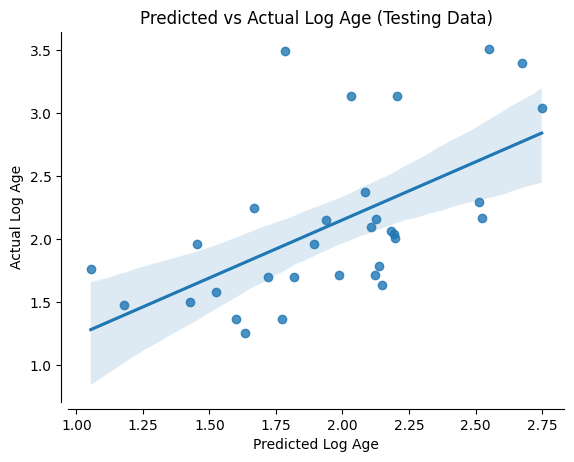
Alright, somewhat as expected given the performance values above.
While the model and pipelines we used appear to be not really working in terms of predicting our target data, ie age based on functional connectomes, we at least see a stable performance when applied to the test data. However, of course the question would be: Is this model “usefull”? Overall, it might not be the best idea to employ this model in the wild given its performance.
There are many possible reasons why this could be the case, from all the aspects we explored here (and the many more we did not had the time to go through) to the underlying data.
To outline this and vast landscape of options you have to define and run machine learning analyzes, we will:
use a different
learning problem-> instead ofpredictingthecontinuoustargetage, we will try to predict acategoricaltarget, hereChild_Adult, indicating ifparticipantswerechildrenoradultsnot do any
adaptation-> nopreprocessing,hyperparameter tuningorfeature selectionapply the
modelto allfunctional connectometypes we computed before ->correlation,partial correlation,tangent
and in the end compare the outcome qualitatively.
To do that, we initially have to load all previously computed functional connectomes.
X_features_cor = np.load('data/development_fmri_correlation_matrix.npz', allow_pickle=True)['correlation_matrices']
features_unique = []
for i, matrix in enumerate(X_features_cor):
features_unique_tmp = connectome.sym_matrix_to_vec(matrix, discard_diagonal=True)
features_unique.append(features_unique_tmp)
X_features_cor = np.array(features_unique)
X_features_par_cor = np.load('data/development_fmri_partial_correlation_matrix.npz', allow_pickle=True)['partial_correlation_matrices']
features_unique = []
for i, matrix in enumerate(X_features_par_cor):
features_unique_tmp = connectome.sym_matrix_to_vec(matrix, discard_diagonal=True)
features_unique.append(features_unique_tmp)
X_features_par_cor = np.array(features_unique)
X_features_tan = np.load('data/development_fmri_tangent_matrix.npz', allow_pickle=True)['tangent_matrices']
features_unique = []
for i, matrix in enumerate(X_features_tan):
features_unique_tmp = connectome.sym_matrix_to_vec(matrix, discard_diagonal=True)
features_unique.append(features_unique_tmp)
X_features_tan = np.array(features_unique)
Next, we are going to get and assign our new target, this time two classes: Child or Adult.
groups = demographic_info['Child_Adult']
_, classes = np.unique(groups, return_inverse=True)
We then define all functional connectome types
kinds = ["correlation", "partial correlation", "tangent"]
and create a new cross-validatio strategy with 15 splits and a test_size of 5, as well as the participants, ie our samples (n) we want to split into training and test data.
from sklearn.model_selection import StratifiedShuffleSplit
cv = StratifiedShuffleSplit(n_splits=15, random_state=0, test_size=5)
pooled_subjects = np.asarray(demographic_info['participant_id'])
Having everything in place, we can run the model, looping over the different functional connectome types and storing the respective outcomes, that is performance.
from sklearn.metrics import accuracy_score
from sklearn.svm import LinearSVC
scores = {}
for kind in kinds:
scores[kind] = []
for train, test in cv.split(pooled_subjects, classes):
if kind == 'correlation':
# fit the classifier
classifier = LinearSVC(dual=True).fit(X_features_cor[train], classes[train])
# make predictions for the left-out test subjects
predictions = classifier.predict(X_features_cor[test]
)
# store the accuracy for this cross-validation fold
scores[kind].append(accuracy_score(classes[test], predictions))
if kind == 'partial correlation':
# fit the classifier
classifier = LinearSVC(dual=True).fit(X_features_par_cor[train], classes[train])
# make predictions for the left-out test subjects
predictions = classifier.predict(X_features_par_cor[test]
)
# store the accuracy for this cross-validation fold
scores[kind].append(accuracy_score(classes[test], predictions))
if kind == 'tangent':
# fit the classifier
classifier = LinearSVC(dual=True).fit(X_features_tan[train], classes[train])
# make predictions for the left-out test subjects
predictions = classifier.predict(X_features_tan[test]
)
# store the accuracy for this cross-validation fold
scores[kind].append(accuracy_score(classes[test], predictions))
Great. Now we can compute the mean scores and score std for each input, X, ie functional connectome type
mean_scores = [np.mean(scores[kind]) for kind in kinds]
scores_std = [np.std(scores[kind]) for kind in kinds]
and check them:
mean_scores
[0.7733333333333335, 0.7866666666666668, 0.8133333333333336]
scores_std
[0.12364824660660939, 0.08844332774281068, 0.04988876515698587]
However, in order to get a better understanding of the performance of our model based on the different inputs, X, ie functional connectomes, we will create a little graphic plotting the respective values, also indicating chance level.
plt.figure(figsize=(6, 4), constrained_layout=True)
positions = np.arange(len(kinds)) * 0.1 + 0.1
plt.barh(positions, mean_scores, align="center", height=0.05, xerr=scores_std, color='teal')
yticks = [k.replace(" ", "\n") for k in kinds]
plt.yticks(positions, yticks)
plt.gca().grid(True)
plt.gca().set_axisbelow(True)
plt.gca().axvline(0.5, color="purple", linestyle="--")
plt.xlabel("Classification accuracy\n(purple line = chance level)")
sns.despine(offset=5)
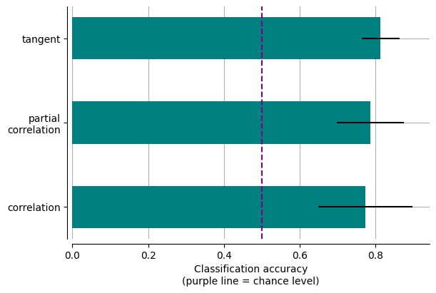